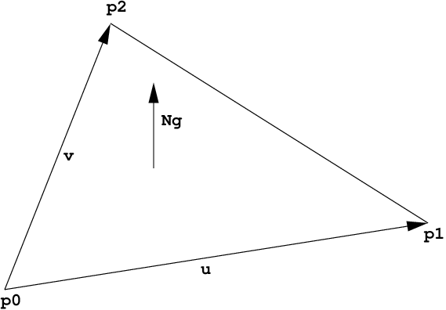
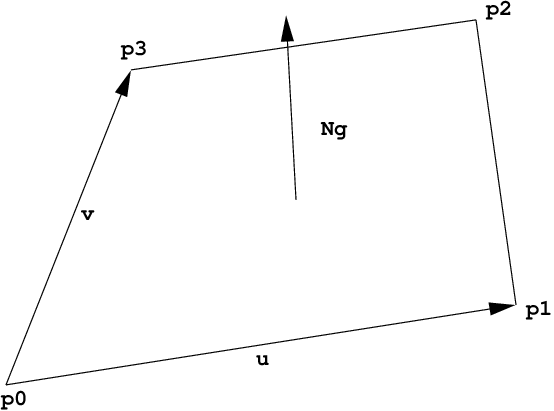

Introduction#
The Embree API is a low-level C99 ray tracing API which can be used to
construct 3D scenes and perform ray queries of different types inside
these scenes. All API calls carry the prefix rtc (or RTC for
types) which stands for ray tracing core.
The API also exists in an ISPC version, which is almost identical but contains additional functions that operate on ray packets with a size of the native SIMD width used by ISPC. For simplicity this document refers to the C99 version of the API functions. For changes when upgrading from the Embree 2 to the current Embree 3 API see Section [Upgrading from Embree 2 to Embree 3].
The API supports scenes consisting of different geometry types such as triangle meshes, quad meshes (triangle pairs), grid meshes, flat curves, round curves, oriented curves, subdivision meshes, instances, and user-defined geometries. See Section Scene Object for more information.
Finding the closest hit of a ray segment with the scene
(rtcIntersect-type functions), and determining whether any hit
between a ray segment and the scene exists (rtcOccluded-type
functions) are both supported. The API supports queries for single rays,
ray packets, and ray streams. See Section Ray Queries
for more information.
The API is designed in an object-oriented manner, e.g. it contains
device objects (RTCDevice type), scene objects (RTCScene type),
geometry objects (RTCGeometry type), buffer objects (RTCBuffer
type), and BVH objects (RTCBVH type). All objects are reference
counted, and handles can be released by calling the appropriate release
function (e.g. rtcReleaseDevice) or retained by incrementing the
reference count (e.g. rtcRetainDevice). In general, API calls that
access the same object are not thread-safe, unless specified
differently. However, attaching geometries to the same scene and
performing ray queries in a scene is thread-safe.
Device Object#
Embree supports a device concept, which allows different components of the application to use the Embree API without interfering with each other. An application typically first creates a device using the rtcNewDevice function. This device can then be used to construct further objects, such as scenes and geometries. Before the application exits, it should release all devices by invoking rtcReleaseDevice. An application typically creates only a single device. If required differently, it should only use a small number of devices at any given time.
Each user thread has its own error flag per device. If an error occurs when invoking an API function, this flag is set to an error code (if it isn’t already set by a previous error). See Section rtcGetDeviceError for information on how to read the error code and Section rtcSetDeviceErrorFunction on how to register a callback that is invoked for each error encountered. It is recommended to always set a error callback function, to detect all errors.
Scene Object#
A scene is a container for a set of geometries, and contains a spatial acceleration structure which can be used to perform different types of ray queries.
A scene is created using the rtcNewScene function call, and released
using the rtcReleaseScene function call. To populate a scene with
geometries use the rtcAttachGeometry call, and to detach them use
the rtcDetachGeometry call. Once all scene geometries are attached,
an rtcCommitScene call (or rtcJoinCommitScene call) will finish
the scene description and trigger building of internal data structures.
After the scene got committed, it is safe to perform ray queries (see
Section Ray Queries) or to query the scene bounding
box (see rtcGetSceneBounds and
rtcGetSceneLinearBounds).
If scene geometries get modified or attached or detached, the
rtcCommitScene call must be invoked before performing any further
ray queries for the scene; otherwise the effect of the ray query is
undefined. The modification of a geometry, committing the scene, and
tracing of rays must always happen sequentially, and never at the same
time. Any API call that sets a property of the scene or geometries
contained in the scene count as scene modification, e.g. including
setting of intersection filter functions.
Scene flags can be used to configure a scene to use less memory
(RTC_SCENE_FLAG_COMPACT), use more robust traversal algorithms
(RTC_SCENE_FLAG_ROBUST), and to optimize for dynamic content. See
Section rtcSetSceneFlags for more details.
A build quality can be specified for a scene to balance between acceleration structure build performance and ray query performance. See Section rtcSetSceneBuildQuality for more details on build quality.
Geometry Object#
A new geometry is created using the rtcNewGeometry function.
Depending on the geometry type, different buffers must be bound
(e.g. using rtcSetSharedGeometryBuffer) to set up the geometry data.
In most cases, binding of a vertex and index buffer is required. The
number of primitives and vertices of that geometry is typically inferred
from the size of these bound buffers.
Changes to the geometry always must be committed using the
rtcCommitGeometry call before using the geometry. After committing,
a geometry is not included in any scene. A geometry can be added to a
scene by using the rtcAttachGeometry function (to automatically
assign a geometry ID) or using the rtcAttachGeometryById function
(to specify the geometry ID manually). A geometry can get attached to
multiple scenes.
All geometry types support multi-segment motion blur with an arbitrary
number of equidistant time steps (in the range of 2 to 129) inside a
user specified time range. Each geometry can have a different number of
time steps and a different time range. The motion blur geometry is
defined by linearly interpolating the geometries of neighboring time
steps. To construct a motion blur geometry, first the number of time
steps of the geometry must be specified using the
rtcSetGeometryTimeStepCount function, and then a vertex buffer for
each time step must be bound, e.g. using the
rtcSetSharedGeometryBuffer function. Optionally, a time range
defining the start (and end time) of the first (and last) time step can
be set using the rtcSetGeometryTimeRange function. This feature will
also allow geometries to appear and disappear during the camera shutter
time if the time range is a sub range of [0,1].
The API supports per-geometry filter callback functions (see
rtcSetGeometryIntersectFilterFunction and
rtcSetGeometryOccludedFilterFunction) that are invoked for each
intersection found during the rtcIntersect-type or
rtcOccluded-type calls. The former ones are called geometry
intersection filter functions, the latter ones geometry occlusion filter
functions. These filter functions are designed to be used to ignore
intersections outside of a user-defined silhouette of a primitive,
e.g. to model tree leaves using transparency textures.
Ray Queries#
The API supports finding the closest hit of a ray segment with the scene
(rtcIntersect-type functions), and determining whether any hit
between a ray segment and the scene exists (rtcOccluded-type
functions).
Supported are single ray queries (rtcIntersect1 and
rtcOccluded1) as well as ray packet queries for ray packets of size
4 (rtcIntersect4 and rtcOccluded4), ray packets of size 8
(rtcIntersect8 and rtcOccluded8), and ray packets of size 16
(rtcIntersect16 and rtcOccluded16).
Ray streams in a variety of layouts are supported as well, such as
streams of single rays (rtcIntersect1M and rtcOccluded1M),
streams of pointers to single rays (rtcIntersect1p and
rtcOccluded1p), streams of ray packets (rtcIntersectNM and
rtcOccludedNM), and large packet-like streams in structure of
pointer layout (rtcIntersectNp and rtcOccludedNp).
See Sections rtcIntersect1 and rtcOccluded1 for a detailed description of how to set up and trace a ray.
See tutorial Triangle Geometry for a complete example of how to trace single rays and ray packets. Also have a look at the tutorial Stream Viewer for an example of how to trace ray streams.
Point Queries#
The API supports traversal of the BVH using a point query object that specifies a location and a query radius. For all primitives intersecting the according domain, a user defined callback function is called which allows queries such as finding the closest point on the surface geometries of the scene (see Tutorial Closest Point) or nearest neighbour queries (see Tutorial Voronoi).
See Section rtcPointQuery for a detailed description of how to set up point queries.
Collision Detection#
The Embree API also supports collision detection queries between two scenes consisting only of user geometries. Embree only performs broadphase collision detection, the narrow phase detection can be performed through a callback function.
See Section rtcCollide for a detailed description of how to set up collision detection.
Seen tutorial Collision Detection for a complete example of collision detection being used on a simple cloth solver.
Miscellaneous#
A context filter function, which can be set per ray query is supported
(see rtcInitIntersectContext). This filter function is designed to
change the semantics of the ray query, e.g. to accumulate opacity for
transparent shadows, count the number of surfaces along a ray, collect
all hits along a ray, etc.
The internal algorithms to build a BVH are exposed through the
RTCBVH object and rtcBuildBVH call. This call makes it possible
to build a BVH in a user-specified format over user-specified
primitives. See the documentation of the rtcBuildBVH call for more
details.
For getting the most performance out of Embree, see the Section [Performance Recommendations].
Embree API#
rtcNewDevice#
NAME#
rtcNewDevice - creates a new device
SYNOPSIS#
#include <embree3/rtcore.h>
RTCDevice rtcNewDevice(const char* config);
DESCRIPTION#
This function creates a new device and returns a handle to this device.
The device object is reference counted with an initial reference count
of 1. The handle can be released using the rtcReleaseDevice API
call.
The device object acts as a class factory for all other object types. All objects created from the device (like scenes, geometries, etc.) hold a reference to the device, thus the device will not be destroyed unless these objects are destroyed first.
Objects are only compatible if they belong to the same device, e.g it is not allowed to create a geometry in one device and attach it to a scene created with a different device.
A configuration string (config argument) can be passed to the device
construction. This configuration string can be NULL to use the
default configuration.
The following configuration is supported:
threads=[int]: Specifies a number of build threads to use. A value of 0 enables all detected hardware threads. By default all hardware threads are used.user_threads=[int]: Sets the number of user threads that can be used to join and participate in a scene commit usingrtcJoinCommitScene. The tasking system will only use threads-user_threads many worker threads, thus if the app wants to solely use its threads to commit scenes, just set threads equal to user_threads. This option only has effect with the Intel(R) Threading Building Blocks (TBB) tasking system.set_affinity=[0/1]: When enabled, build threads are affinitized to hardware threads. This option is disabled by default on standard CPUs, and enabled by default on Xeon Phi Processors.start_threads=[0/1]: When enabled, the build threads are started upfront. This can be useful for benchmarking to exclude thread creation time. This option is disabled by default.isa=[sse2,sse4.2,avx,avx2,avx512]: Use specified ISA. By default the ISA is selected automatically.max_isa=[sse2,sse4.2,avx,avx2,avx512]: Configures the automated ISA selection to use maximally the specified ISA.hugepages=[0/1]: Enables or disables usage of huge pages. Under Linux huge pages are used by default but under Windows and macOS they are disabled by default.enable_selockmemoryprivilege=[0/1]: When set to 1, this enables theSeLockMemoryPrivilegeprivilege with is required to use huge pages on Windows. This option has an effect only under Windows and is ignored on other platforms. See Section [Huge Page Support] for more details.verbose=[0,1,2,3]: Sets the verbosity of the output. When set to 0, no output is printed by Embree, when set to a higher level more output is printed. By default Embree does not print anything on the console.frequency_level=[simd128,simd256,simd512]: Specifies the frequency level the application want to run on, which can be either:simd128 to run at highest frequency
simd256 to run at AVX2-heavy frequency level
simd512 to run at heavy AVX512 frequency level. When some frequency level is specified, Embree will avoid doing optimizations that may reduce the frequency level below the level specified. E.g. if your app does not use AVX instructions setting “frequency_level=simd128” will cause some CPUs to run at highest frequency, which may result in higher application performance if you do much shading. If you application heavily uses AVX code, you should best set the frequency level to simd256. Per default Embree tries to avoid reducing the frequency of the CPU by setting the simd256 level only when the CPU has no significant down clocking.
Different configuration options should be separated by commas, e.g.:
rtcNewDevice("threads=1,isa=avx");
EXIT STATUS#
On success returns a handle of the created device. On failure returns
NULL as device and sets a per-thread error code that can be queried
using rtcGetDeviceError(NULL).
SEE ALSO#
rtcRetainDevice#
NAME#
rtcRetainDevice - increments the device reference count
SYNOPSIS#
#include <embree3/rtcore.h>
void rtcRetainDevice(RTCDevice device);
DESCRIPTION#
Device objects are reference counted. The rtcRetainDevice function
increments the reference count of the passed device object (device
argument). This function together with rtcReleaseDevice allows to
use the internal reference counting in a C++ wrapper class to manage the
ownership of the object.
EXIT STATUS#
On failure an error code is set that can be queried using
rtcGetDeviceError.
SEE ALSO#
rtcReleaseDevice#
NAME#
rtcReleaseDevice - decrements the device reference count
SYNOPSIS#
#include <embree3/rtcore.h>
void rtcReleaseDevice(RTCDevice device);
DESCRIPTION#
Device objects are reference counted. The rtcReleaseDevice function
decrements the reference count of the passed device object (device
argument). When the reference count falls to 0, the device gets
destroyed.
All objects created from the device (like scenes, geometries, etc.) hold a reference to the device, thus the device will not get destroyed unless these objects are destroyed first.
EXIT STATUS#
On failure an error code is set that can be queried using
rtcGetDeviceError.
SEE ALSO#
rtcGetDeviceProperty#
NAME#
rtcGetDeviceProperty - queries properties of the device
SYNOPSIS#
#include <embree3/rtcore.h>
ssize_t rtcGetDeviceProperty(
RTCDevice device,
enum RTCDeviceProperty prop
);
DESCRIPTION#
The rtcGetDeviceProperty function can be used to query properties
(prop argument) of a device object (device argument). The
returned property is an integer of type ssize_t.
Possible properties to query are:
RTC_DEVICE_PROPERTY_VERSION: Queries the combined version number (MAJOR.MINOR.PATCH) with two decimal digits per component. E.g. for Embree 2.8.3 the integer 208003 is returned.RTC_DEVICE_PROPERTY_VERSION_MAJOR: Queries the major version number of Embree.RTC_DEVICE_PROPERTY_VERSION_MINOR: Queries the minor version number of Embree.RTC_DEVICE_PROPERTY_VERSION_PATCH: Queries the patch version number of Embree.RTC_DEVICE_PROPERTY_NATIVE_RAY4_SUPPORTED: Queries whether thertcIntersect4andrtcOccluded4functions preserve packet size and ray order when invoking callback functions. This is only the case if Embree is compiled withEMBREE_RAY_PACKETSandSSE2(orSSE4.2) enabled, and if the machine it is running on supportsSSE2(orSSE4.2).RTC_DEVICE_PROPERTY_NATIVE_RAY8_SUPPORTED: Queries whether thertcIntersect8andrtcOccluded8functions preserve packet size and ray order when invoking callback functions. This is only the case if Embree is compiled withEMBREE_RAY_PACKETSandAVX(orAVX2) enabled, and if the machine it is running on supportsAVX(orAVX2).RTC_DEVICE_PROPERTY_NATIVE_RAY16_SUPPORTED: Queries whether thertcIntersect16andrtcOccluded16functions preserve packet size and ray order when invoking callback functions. This is only the case if Embree is compiled withEMBREE_RAY_PACKETSandAVX512enabled, and if the machine it is running on supportsAVX512.RTC_DEVICE_PROPERTY_RAY_STREAM_SUPPORTED: Queries whetherrtcIntersect1M,rtcIntersect1Mp,rtcIntersectNM,rtcIntersectNp,rtcOccluded1M,rtcOccluded1Mp,rtcOccludedNM, andrtcOccludedNpare supported. This is only the case if Embree is compiled withEMBREE_RAY_PACKETSenabled.RTC_DEVICE_PROPERTY_RAY_MASK_SUPPORTED: Queries whether ray masks are supported. This is only the case if Embree is compiled withEMBREE_RAY_MASKenabled.RTC_DEVICE_PROPERTY_BACKFACE_CULLING_ENABLED: Queries whether back face culling is enabled. This is only the case if Embree is compiled withEMBREE_BACKFACE_CULLINGenabled.RTC_DEVICE_PROPERTY_COMPACT_POLYS_ENABLED: Queries whether compact polys is enabled. This is only the case if Embree is compiled withEMBREE_COMPACT_POLYSenabled.RTC_DEVICE_PROPERTY_FILTER_FUNCTION_SUPPORTED: Queries whether filter functions are supported, which is the case if Embree is compiled withEMBREE_FILTER_FUNCTIONenabled.RTC_DEVICE_PROPERTY_IGNORE_INVALID_RAYS_ENABLED: Queries whether invalid rays are ignored, which is the case if Embree is compiled withEMBREE_IGNORE_INVALID_RAYSenabled.RTC_DEVICE_PROPERTY_TRIANGLE_GEOMETRY_SUPPORTED: Queries whether triangles are supported, which is the case if Embree is compiled withEMBREE_GEOMETRY_TRIANGLEenabled.RTC_DEVICE_PROPERTY_QUAD_GEOMETRY_SUPPORTED: Queries whether quads are supported, which is the case if Embree is compiled withEMBREE_GEOMETRY_QUADenabled.RTC_DEVICE_PROPERTY_SUBDIVISION_GEOMETRY_SUPPORTED: Queries whether subdivision meshes are supported, which is the case if Embree is compiled withEMBREE_GEOMETRY_SUBDIVISIONenabled.RTC_DEVICE_PROPERTY_CURVE_GEOMETRY_SUPPORTED: Queries whether curves are supported, which is the case if Embree is compiled withEMBREE_GEOMETRY_CURVEenabled.RTC_DEVICE_PROPERTY_POINT_GEOMETRY_SUPPORTED: Queries whether points are supported, which is the case if Embree is compiled withEMBREE_GEOMETRY_POINTenabled.RTC_DEVICE_PROPERTY_USER_GEOMETRY_SUPPORTED: Queries whether user geometries are supported, which is the case if Embree is compiled withEMBREE_GEOMETRY_USERenabled.RTC_DEVICE_PROPERTY_TASKING_SYSTEM: Queries the tasking system Embree is compiled with. Possible return values are:internal tasking system
Intel Threading Building Blocks (TBB)
Parallel Patterns Library (PPL)
RTC_DEVICE_PROPERTY_JOIN_COMMIT_SUPPORTED: Queries whetherrtcJoinCommitSceneis supported. This is not the case when Embree is compiled with PPL or older versions of TBB.RTC_DEVICE_PROPERTY_PARALLEL_COMMIT_SUPPORTED: Queries whetherrtcCommitScenecan get invoked from multiple TBB worker threads concurrently. This feature is only supported starting with TBB 2019 Update 9.
EXIT STATUS#
On success returns the value of the queried property. For properties
returning a boolean value, the return value 0 denotes false and 1
denotes true.
On failure zero is returned and an error code is set that can be queried
using rtcGetDeviceError.
rtcGetDeviceError#
NAME#
rtcGetDeviceError - returns the error code of the device
SYNOPSIS#
#include <embree3/rtcore.h>
RTCError rtcGetDeviceError(RTCDevice device);
DESCRIPTION#
Each thread has its own error code per device. If an error occurs when
calling an API function, this error code is set to the occurred error if
it stores no previous error. The rtcGetDeviceError function reads
and returns the currently stored error and clears the error code. This
assures that the returned error code is always the first error occurred
since the last invocation of rtcGetDeviceError.
Possible error codes returned by rtcGetDeviceError are:
RTC_ERROR_NONE: No error occurred.RTC_ERROR_UNKNOWN: An unknown error has occurred.RTC_ERROR_INVALID_ARGUMENT: An invalid argument was specified.RTC_ERROR_INVALID_OPERATION: The operation is not allowed for the specified object.RTC_ERROR_OUT_OF_MEMORY: There is not enough memory left to complete the operation.RTC_ERROR_UNSUPPORTED_CPU: The CPU is not supported as it does not support the lowest ISA Embree is compiled for.RTC_ERROR_CANCELLED: The operation got canceled by a memory monitor callback or progress monitor callback function.
When the device construction fails, rtcNewDevice returns NULL as
device. To detect the error code of a such a failed device construction,
pass NULL as device to the rtcGetDeviceError function. For all
other invocations of rtcGetDeviceError, a proper device pointer must
be specified.
EXIT STATUS#
Returns the error code for the device.
SEE ALSO#
rtcSetDeviceErrorFunction#
NAME#
rtcSetDeviceErrorFunction - sets an error callback function for the device
SYNOPSIS#
#include <embree3/rtcore.h>
typedef void (*RTCErrorFunction)(
void* userPtr,
RTCError code,
const char* str
);
void rtcSetDeviceErrorFunction(
RTCDevice device,
RTCErrorFunction error,
void* userPtr
);
DESCRIPTION#
Using the rtcSetDeviceErrorFunction call, it is possible to set a
callback function (error argument) with payload (userPtr
argument), which is called whenever an error occurs for the specified
device (device argument).
Only a single callback function can be registered per device, and
further invocations overwrite the previously set callback function.
Passing NULL as function pointer disables the registered callback
function.
When the registered callback function is invoked, it gets passed the
user-defined payload (userPtr argument as specified at registration
time), the error code (code argument) of the occurred error, as well
as a string (str argument) that further describes the error.
The error code is also set if an error callback function is registered.
EXIT STATUS#
On failure an error code is set that can be queried using
rtcGetDeviceError.
SEE ALSO#
rtcSetDeviceMemoryMonitorFunction#
NAME#
rtcSetDeviceMemoryMonitorFunction - registers a callback function
to track memory consumption
SYNOPSIS#
#include <embree3/rtcore.h>
typedef bool (*RTCMemoryMonitorFunction)(
void* userPtr,
ssize_t bytes,
bool post
);
void rtcSetDeviceMemoryMonitorFunction(
RTCDevice device,
RTCMemoryMonitorFunction memoryMonitor,
void* userPtr
);
DESCRIPTION#
Using the rtcSetDeviceMemoryMonitorFunction call, it is possible to
register a callback function (memoryMonitor argument) with payload
(userPtr argument) for a device (device argument), which is
called whenever internal memory is allocated or deallocated by objects
of that device. Using this memory monitor callback mechanism, the
application can track the memory consumption of an Embree device, and
optionally terminate API calls that consume too much memory.
Only a single callback function can be registered per device, and
further invocations overwrite the previously set callback function.
Passing NULL as function pointer disables the registered callback
function.
Once registered, the Embree device will invoke the memory monitor
callback function before or after it allocates or frees important memory
blocks. The callback function gets passed the payload as specified at
registration time (userPtr argument), the number of bytes allocated
or deallocated (bytes argument), and whether the callback is invoked
after the allocation or deallocation took place (post argument). The
callback function might get called from multiple threads concurrently.
The application can track the current memory usage of the Embree device
by atomically accumulating the bytes input parameter provided to the
callback function. This parameter will be >0 for allocations and <0 for
deallocations.
Embree will continue its operation normally when returning true from
the callback function. If false is returned, Embree will cancel the
current operation with the RTC_ERROR_OUT_OF_MEMORY error code.
Issuing multiple cancel requests from different threads is allowed.
Canceling will only happen when the callback was called for allocations
(bytes > 0), otherwise the cancel request will be ignored.
If a callback to cancel was invoked before the allocation happens
(post == false), then the bytes parameter should not be
accumulated, as the allocation will never happen. If the callback to
cancel was invoked after the allocation happened (post == true),
then the bytes parameter should be accumulated, as the allocation
properly happened and a deallocation will later free that data block.
EXIT STATUS#
On failure an error code is set that can be queried using
rtcGetDeviceError.
SEE ALSO#
rtcNewScene#
NAME#
rtcNewScene - creates a new scene
SYNOPSIS#
#include <embree3/rtcore.h>
RTCScene rtcNewScene(RTCDevice device);
DESCRIPTION#
This function creates a new scene bound to the specified device
(device argument), and returns a handle to this scene. The scene
object is reference counted with an initial reference count of 1. The
scene handle can be released using the rtcReleaseScene API call.
EXIT STATUS#
On success a scene handle is returned. On failure NULL is returned
and an error code is set that can be queried using
rtcGetDeviceError.
SEE ALSO#
rtcGetSceneDevice#
NAME#
rtcGetSceneDevice - returns the device the scene got created in
SYNOPSIS#
#include <embree3/rtcore.h>
RTCDevice rtcGetSceneDevice(RTCScene scene);
DESCRIPTION#
This function returns the device object the scene got created in. The
returned handle own one additional reference to the device object, thus
you should need to call rtcReleaseDevice when the returned handle is
no longer required.
EXIT STATUS#
On failure an error code is set that can be queried using
rtcGetDeviceError.
SEE ALSO#
rtcRetainScene#
NAME#
rtcRetainScene - increments the scene reference count
SYNOPSIS#
#include <embree3/rtcore.h>
void rtcRetainScene(RTCScene scene);
DESCRIPTION#
Scene objects are reference counted. The rtcRetainScene function
increments the reference count of the passed scene object (scene
argument). This function together with rtcReleaseScene allows to use
the internal reference counting in a C++ wrapper class to handle the
ownership of the object.
EXIT STATUS#
On failure an error code is set that can be queried using
rtcGetDeviceError.
SEE ALSO#
rtcReleaseScene#
NAME#
rtcReleaseScene - decrements the scene reference count
SYNOPSIS#
#include <embree3/rtcore.h>
void rtcReleaseScene(RTCScene scene);
DESCRIPTION#
Scene objects are reference counted. The rtcReleaseScene function
decrements the reference count of the passed scene object (scene
argument). When the reference count falls to 0, the scene gets
destroyed.
The scene holds a reference to all attached geometries, thus if the scene gets destroyed, all geometries get detached and their reference count decremented.
EXIT STATUS#
On failure an error code is set that can be queried using
rtcGetDeviceError.
SEE ALSO#
rtcAttachGeometry#
NAME#
rtcAttachGeometry - attaches a geometry to the scene
SYNOPSIS#
#include <embree3/rtcore.h>
unsigned int rtcAttachGeometry(
RTCScene scene,
RTCGeometry geometry
);
DESCRIPTION#
The rtcAttachGeometry function attaches a geometry (geometry
argument) to a scene (scene argument) and assigns a geometry ID to
that geometry. All geometries attached to a scene are defined to be
included inside the scene. A geometry can get attached to multiplee
scene. The geometry ID is unique for the scene, and is used to identify
the geometry when hit by a ray during ray queries.
This function is thread-safe, thus multiple threads can attach geometries to a scene in parallel.
The geometry IDs are assigned sequentially, starting from 0, as long as no geometry got detached. If geometries got detached, the implementation will reuse IDs in an implementation dependent way. Consequently sequential assignment is no longer guaranteed, but a compact range of IDs.
These rules allow the application to manage a dynamic array to
efficiently map from geometry IDs to its own geometry representation.
Alternatively, the application can also use per-geometry user data to
map to its geometry representation. See rtcSetGeometryUserData and
rtcGetGeometryUserData for more information.
EXIT STATUS#
On failure an error code is set that can be queried using
rtcGetDeviceError.
SEE ALSO#
rtcAttachGeometryByID#
NAME#
rtcAttachGeometryByID - attaches a geometry to the scene
using a specified geometry ID
SYNOPSIS#
#include <embree3/rtcore.h>
void rtcAttachGeometryByID(
RTCScene scene,
RTCGeometry geometry,
unsigned int geomID
);
DESCRIPTION#
The rtcAttachGeometryByID function attaches a geometry (geometry
argument) to a scene (scene argument) and assigns a user provided
geometry ID (geomID argument) to that geometry. All geometries
attached to a scene are defined to be included inside the scene. A
geometry can get attached to multiple scenes. The passed user-defined
geometry ID is used to identify the geometry when hit by a ray during
ray queries. Using this function, it is possible to share the same IDs
to refer to geometries inside the application and Embree.
This function is thread-safe, thus multiple threads can attach geometries to a scene in parallel.
The user-provided geometry ID must be unused in the scene, otherwise the creation of the geometry will fail. Further, the user-provided geometry IDs should be compact, as Embree internally creates a vector which size is equal to the largest geometry ID used. Creating very large geometry IDs for small scenes would thus cause a memory consumption and performance overhead.
EXIT STATUS#
On failure an error code is set that can be queried using
rtcGetDeviceError.
SEE ALSO#
rtcDetachGeometry#
NAME#
rtcDetachGeometry - detaches a geometry from the scene
SYNOPSIS#
#include <embree3/rtcore.h>
void rtcDetachGeometry(RTCScene scene, unsigned int geomID);
DESCRIPTION#
This function detaches a geometry identified by its geometry ID
(geomID argument) from a scene (scene argument). When detached,
the geometry is no longer contained in the scene.
This function is thread-safe, thus multiple threads can detach geometries from a scene at the same time.
EXIT STATUS#
On failure an error code is set that can be queried using
rtcGetDeviceError.
SEE ALSO#
rtcGetGeometry#
NAME#
rtcGetGeometry - returns the geometry bound to
the specified geometry ID
SYNOPSIS#
#include <embree3/rtcore.h>
RTCGeometry rtcGetGeometry(RTCScene scene, unsigned int geomID);
DESCRIPTION#
The rtcGetGeometry function returns the geometry that is bound to
the specified geometry ID (geomID argument) for the specified scene
(scene argument). This function just looks up the handle and does
not increment the reference count. If you want to get ownership of the
handle, you need to additionally call rtcRetainGeometry.
This function is not thread safe and thus can be used during rendering. However, it is generally recommended to store the geometry handle inside the application’s geometry representation and look up the geometry handle from that representation directly.
If you need a thread safe version of this function please use rtcGetGeometryThreadSafe.
EXIT STATUS#
On failure NULL is returned and an error code is set that can be
queried using rtcGetDeviceError.
SEE ALSO#
rtcAttachGeometry, rtcAttachGeometryByID, rtcGetGeometryThreadSafe
rtcGetGeometryThreadSafe#
NAME#
rtcGetGeometryThreadSafe - returns the geometry bound to
the specified geometry ID
SYNOPSIS#
#include <embree3/rtcore.h>
RTCGeometry rtcGetGeometryThreadSafe(RTCScene scene, unsigned int geomID);
DESCRIPTION#
The rtcGetGeometryThreadSafe function returns the geometry that is
bound to the specified geometry ID (geomID argument) for the
specified scene (scene argument). This function just looks up the
handle and does not increment the reference count. If you want to get
ownership of the handle, you need to additionally call
rtcRetainGeometry.
This function is thread safe and should NOT get used during rendering. If you need a fast non-thread safe version during rendering please use the rtcGetGeometry function.
EXIT STATUS#
On failure NULL is returned and an error code is set that can be
queried using rtcGetDeviceError.
SEE ALSO#
rtcCommitScene#
NAME#
rtcCommitScene - commits scene changes
SYNOPSIS#
#include <embree3/rtcore.h>
void rtcCommitScene(RTCScene scene);
DESCRIPTION#
The rtcCommitScene function commits all changes for the specified
scene (scene argument). This internally triggers building of a
spatial acceleration structure for the scene using all available worker
threads. Ray queries can be performed only after committing all scene
changes.
If the application uses TBB 2019 Update 9 or later for parallelization
of rendering, lazy scene construction during rendering is supported by
rtcCommitScene. Therefore rtcCommitScene can get called from
multiple TBB worker threads concurrently for the same scene. The
rtcCommitScene function will then internally isolate the scene
construction using a tbb::isolated_task_group. The alternative approach
of using rtcJoinCommitScene which uses an tbb:task_arena internally,
is not recommended due to it’s high runtime overhead.
If scene geometries get modified or attached or detached, the
rtcCommitScene call must be invoked before performing any further
ray queries for the scene; otherwise the effect of the ray query is
undefined. The modification of a geometry, committing the scene, and
tracing of rays must always happen sequentially, and never at the same
time. Any API call that sets a property of the scene or geometries
contained in the scene count as scene modification, e.g. including
setting of intersection filter functions.
The kind of acceleration structure built can be influenced using scene
flags (see rtcSetSceneFlags), and the quality can be specified using
the rtcSetSceneBuildQuality function.
Embree silently ignores primitives during spatial acceleration structure construction that would cause numerical issues, e.g. primitives containing NaNs, INFs, or values greater than 1.844E18f (as no reasonable calculations can be performed with such values without causing overflows).
EXIT STATUS#
On failure an error code is set that can be queried using
rtcGetDeviceError.
SEE ALSO#
rtcJoinCommitScene#
NAME#
rtcJoinCommitScene - commits the scene from multiple threads
SYNOPSIS#
#include <embree3/rtcore.h>
void rtcJoinCommitScene(RTCScene scene);
DESCRIPTION#
The rtcJoinCommitScene function commits all changes for the
specified scene (scene argument). The scene commit internally
triggers building of a spatial acceleration structure for the scene. Ray
queries can be performed after scene changes got properly committed.
The rtcJoinCommitScene function can get called from multiple user
threads which will all cooperate in the build operation. All threads
calling into this function will return from rtcJoinCommitScene after
the scene commit is finished. All threads must consistently call
rtcJoinCommitScene and not rtcCommitScene.
In contrast to the rtcCommitScene function, the
rtcJoinCommitScene function can be called from multiple user
threads, while the rtcCommitScene can only get called from multiple
TBB worker threads when used concurrently. For optimal performance we
strongly recommend using TBB inside the application together with the
rtcCommitScene function and to avoid using the
rtcJoinCommitScene function.
The rtcJoinCommitScene feature allows a flexible way to lazily
create hierarchies during rendering. A thread reaching a
not-yet-constructed sub-scene of a two-level scene can generate the
sub-scene geometry and call rtcJoinCommitScene on that just
generated scene. During construction, further threads reaching the
not-yet-built scene can join the build operation by also invoking
rtcJoinCommitScene. A thread that calls rtcJoinCommitScene after
the build finishes will directly return from the rtcJoinCommitScene
call.
Multiple scene commit operations on different scenes can be running at the same time, hence it is possible to commit many small scenes in parallel, distributing the commits to many threads.
When using Embree with the Intel® Threading Building Blocks (which is
the default), threads that call rtcJoinCommitScene will join the
build operation, but other TBB worker threads might also participate in
the build. To avoid thread oversubscription, we recommend using TBB also
inside the application. Further, the join mode only works properly
starting with TBB v4.4 Update 1. For earlier TBB versions, threads that
call rtcJoinCommitScene to join a running build will just trigger
the build and wait for the build to finish. Further, old TBB versions
with TBB_INTERFACE_VERSION_MAJOR < 8 do not support
rtcJoinCommitScene, and invoking this function will result in an
error.
When using Embree with the internal tasking system, only threads that
call rtcJoinCommitScene will perform the build operation, and no
additional worker threads will be scheduled.
When using Embree with the Parallel Patterns Library (PPL),
rtcJoinCommitScene is not supported and calling that function will
result in an error.
To detect whether rtcJoinCommitScene is supported, use the
rtcGetDeviceProperty function.
EXIT STATUS#
On failure an error code is set that can be queried using
rtcGetDeviceError.
SEE ALSO#
rtcSetSceneProgressMonitorFunction#
NAME#
rtcSetSceneProgressMonitorFunction - registers a callback
to track build progress
SYNOPSIS#
#include <embree3/rtcore.h>
typedef bool (*RTCProgressMonitorFunction)(
void* ptr,
double n
);
void rtcSetSceneProgressMonitorFunction(
RTCScene scene,
RTCProgressMonitorFunction progress,
void* userPtr
);
DESCRIPTION#
Embree supports a progress monitor callback mechanism that can be used to report progress of hierarchy build operations and to cancel build operations.
The rtcSetSceneProgressMonitorFunction registers a progress monitor
callback function (progress argument) with payload (userPtr
argument) for the specified scene (scene argument).
Only a single callback function can be registered per scene, and further
invocations overwrite the previously set callback function. Passing
NULL as function pointer disables the registered callback function.
Once registered, Embree will invoke the callback function multiple times
during hierarchy build operations of the scene, by passing the payload
as set at registration time (userPtr argument), and a double in the
range \([0, 1]\) which estimates the progress of the operation
(n argument). The callback function might be called from multiple
threads concurrently.
When returning true from the callback function, Embree will continue
the build operation normally. When returning false, Embree will
cancel the build operation with the RTC_ERROR_CANCELLED error code.
Issuing multiple cancel requests for the same build operation is
allowed.
EXIT STATUS#
On failure an error code is set that can be queried using
rtcGetDeviceError.
SEE ALSO#
rtcSetSceneBuildQuality#
NAME#
rtcSetSceneBuildQuality - sets the build quality for
the scene
SYNOPSIS#
#include <embree3/rtcore.h>
void rtcSetSceneBuildQuality(
RTCScene scene,
enum RTCBuildQuality quality
);
DESCRIPTION#
The rtcSetSceneBuildQuality function sets the build quality
(quality argument) for the specified scene (scene argument).
Possible values for the build quality are:
RTC_BUILD_QUALITY_LOW: Create lower quality data structures, e.g. for dynamic scenes. A two-level spatial index structure is built when enabling this mode, which supports fast partial scene updates, and allows for setting a per-geometry build quality through thertcSetGeometryBuildQualityfunction.RTC_BUILD_QUALITY_MEDIUM: Default build quality for most usages. Gives a good compromise between build and render performance.RTC_BUILD_QUALITY_HIGH: Create higher quality data structures for final-frame rendering. For certain geometry types this enables a spatial split BVH.
Selecting a higher build quality results in better rendering performance
but slower scene commit times. The default build quality for a scene is
RTC_BUILD_QUALITY_MEDIUM.
EXIT STATUS#
On failure an error code is set that can be queried using
rtcGetDeviceError.
SEE ALSO#
rtcSetSceneFlags#
NAME#
rtcSetSceneFlags - sets the flags for the scene
SYNOPSIS#
#include <embree3/rtcore.h>
void rtcSetSceneFlags(RTCScene scene, enum RTCSceneFlags flags);
DESCRIPTION#
The rtcSetSceneFlags function sets the scene flags (flags
argument) for the specified scene (scene argument). Possible scene
flags are:
RTC_SCENE_FLAG_NONE: No flags set.RTC_SCENE_FLAG_DYNAMIC: Provides better build performance for dynamic scenes (but also higher memory consumption).RTC_SCENE_FLAG_COMPACT: Uses compact acceleration structures and avoids algorithms that consume much memory.RTC_SCENE_FLAG_ROBUST: Uses acceleration structures that allow for robust traversal, and avoids optimizations that reduce arithmetic accuracy. This mode is typically used for avoiding artifacts caused by rays shooting through edges of neighboring primitives.RTC_SCENE_FLAG_CONTEXT_FILTER_FUNCTION: Enables support for a filter function inside the intersection context for this scene. See Section rtcInitIntersectContext for more details.
Multiple flags can be enabled using an or operation,
e.g. RTC_SCENE_FLAG_COMPACT | RTC_SCENE_FLAG_ROBUST.
EXIT STATUS#
On failure an error code is set that can be queried using
rtcGetDeviceError.
SEE ALSO#
rtcGetSceneFlags#
NAME#
rtcGetSceneFlags - returns the flags of the scene
SYNOPSIS#
#include <embree3/rtcore.h>
enum RTCSceneFlags rtcGetSceneFlags(RTCScene scene);
DESCRIPTION#
Queries the flags of a scene. This function can be useful when setting individual flags, e.g. to just set the robust mode without changing other flags the following way:
RTCSceneFlags flags = rtcGetSceneFlags(scene);
rtcSetSceneFlags(scene, RTC_SCENE_FLAG_ROBUST | flags);
EXIT STATUS#
On failure RTC_SCENE_FLAG_NONE is returned and an error code is set
that can be queried using rtcGetDeviceError.
SEE ALSO#
rtcGetSceneBounds#
NAME#
rtcGetSceneBounds - returns the axis-aligned bounding box of the scene
SYNOPSIS#
#include <embree3/rtcore.h>
struct RTCORE_ALIGN(16) RTCBounds
{
float lower_x, lower_y, lower_z, align0;
float upper_x, upper_y, upper_z, align1;
};
void rtcGetSceneBounds(
RTCScene scene,
struct RTCBounds* bounds_o
);
DESCRIPTION#
The rtcGetSceneBounds function queries the axis-aligned bounding box
of the specified scene (scene argument) and stores that bounding box
to the provided destination pointer (bounds_o argument). The stored
bounding box consists of lower and upper bounds for the x, y, and z
dimensions as specified by the RTCBounds structure.
The provided destination pointer must be aligned to 16 bytes. The function may be invoked only after committing the scene; otherwise the result is undefined.
EXIT STATUS#
On failure an error code is set that can be queried using
rtcGetDeviceError.
SEE ALSO#
rtcGetSceneLinearBounds#
NAME#
rtcGetSceneLinearBounds - returns the linear bounds of the scene
SYNOPSIS#
#include <embree3/rtcore.h>
struct RTCORE_ALIGN(16) RTCLinearBounds
{
RTCBounds bounds0;
RTCBounds bounds1;
};
void rtcGetSceneLinearBounds(
RTCScene scene,
struct RTCLinearBounds* bounds_o
);
DESCRIPTION#
The rtcGetSceneLinearBounds function queries the linear bounds of
the specified scene (scene argument) and stores them to the provided
destination pointer (bounds_o argument). The stored linear bounds
consist of bounding boxes for time 0 (bounds0 member) and time 1
(bounds1 member) as specified by the RTCLinearBounds structure.
Linearly interpolating these bounds to a specific time t yields
bounds for the geometry at that time.
The provided destination pointer must be aligned to 16 bytes. The function may be called only after committing the scene, otherwise the result is undefined.
EXIT STATUS#
On failure an error code is set that can be queried using
rtcGetDeviceError.
SEE ALSO#
rtcNewGeometry#
NAME#
rtcNewGeometry - creates a new geometry object
SYNOPSIS#
#include <embree3/rtcore.h>
enum RTCGeometryType
{
RTC_GEOMETRY_TYPE_TRIANGLE,
RTC_GEOMETRY_TYPE_QUAD,
RTC_GEOMETRY_TYPE_SUBDIVISION,
RTC_GEOMETRY_TYPE_FLAT_LINEAR_CURVE,
RTC_GEOMETRY_TYPE_FLAT_BEZIER_CURVE,
RTC_GEOMETRY_TYPE_FLAT_BSPLINE_CURVE,
RTC_GEOMETRY_TYPE_FLAT_HERMITE_CURVE,
RTC_GEOMETRY_TYPE_FLAT_CATMULL_ROM_CURVE,
RTC_GEOMETRY_TYPE_NORMAL_ORIENTED_BEZIER_CURVE,
RTC_GEOMETRY_TYPE_NORMAL_ORIENTED_BSPLINE_CURVE,
RTC_GEOMETRY_TYPE_NORMAL_ORIENTED_HERMITE_CURVE,
RTC_GEOMETRY_TYPE_NORMAL_ORIENTED_CATMULL_ROM_CURVE,
RTC_GEOMETRY_TYPE_CONE_LINEAR_CURVE,
RTC_GEOMETRY_TYPE_ROUND_LINEAR_CURVE,
RTC_GEOMETRY_TYPE_ROUND_BEZIER_CURVE,
RTC_GEOMETRY_TYPE_ROUND_BSPLINE_CURVE,
RTC_GEOMETRY_TYPE_ROUND_HERMITE_CURVE,
RTC_GEOMETRY_TYPE_ROUND_CATMULL_ROM_CURVE,
RTC_GEOMETRY_TYPE_GRID,
RTC_GEOMETRY_TYPE_SPHERE_POINT,
RTC_GEOMETRY_TYPE_DISC_POINT,
RTC_GEOMETRY_TYPE_ORIENTED_DISC_POINT,
RTC_GEOMETRY_TYPE_USER,
RTC_GEOMETRY_TYPE_INSTANCE
};
RTCGeometry rtcNewGeometry(
RTCDevice device,
enum RTCGeometryType type
);
DESCRIPTION#
Geometries are objects that represent an array of primitives of the same
type. The rtcNewGeometry function creates a new geometry of
specified type (type argument) bound to the specified device
(device argument) and returns a handle to this geometry. The
geometry object is reference counted with an initial reference count of
1. The geometry handle can be released using the rtcReleaseGeometry
API call.
RTC_GEOMETRY_TYPE_TRIANGLE type), quad meshes (triangle pairs)
(RTC_GEOMETRY_TYPE_QUAD type), Catmull-Clark subdivision surfaces
(RTC_GEOMETRY_TYPE_SUBDIVISION type), curve geometries with
different bases (RTC_GEOMETRY_TYPE_FLAT_LINEAR_CURVE,
RTC_GEOMETRY_TYPE_FLAT_BEZIER_CURVE,RTC_GEOMETRY_TYPE_FLAT_BSPLINE_CURVE,
RTC_GEOMETRY_TYPE_FLAT_HERMITE_CURVE,RTC_GEOMETRY_TYPE_FLAT_CATMULL_ROM_CURVE,
RTC_GEOMETRY_TYPE_NORMAL_ORIENTED_BEZIER_CURVE,
RTC_GEOMETRY_TYPE_NORMAL_ORIENTED_BSPLINE_CURVE,
RTC_GEOMETRY_TYPE_NORMAL_ORIENTED_HERMITE_CURVE,
RTC_GEOMETRY_TYPE_NORMAL_ORIENTED_CATMULL_ROM_CURVE,
RTC_GEOMETRY_TYPE_CONE_LINEAR_CURVE,
RTC_GEOMETRY_TYPE_ROUND_LINEAR_CURVE,
RTC_GEOMETRY_TYPE_ROUND_BEZIER_CURVE,
RTC_GEOMETRY_TYPE_ROUND_BSPLINE_CURVE,
RTC_GEOMETRY_TYPE_ROUND_HERMITE_CURVE,
RTC_GEOMETRY_TYPE_ROUND_CATMULL_ROM_CURVE types) grid meshes
(RTC_GEOMETRY_TYPE_GRID), point geometries
(RTC_GEOMETRY_TYPE_SPHERE_POINT, RTC_GEOMETRY_TYPE_DISC_POINT,
RTC_TYPE_ORIENTED_DISC_POINT), user-defined geometries
(RTC_GEOMETRY_TYPE_USER), and instances
(RTC_GEOMETRY_TYPE_INSTANCE).The types RTC_GEOMETRY_TYPE_ROUND_BEZIER_CURVE,
RTC_GEOMETRY_TYPE_ROUND_BSPLINE_CURVE, and
RTC_GEOMETRY_TYPE_ROUND_CATMULL_ROM_CURVE will treat the curve as a
sweep surface of a varying-radius circle swept tangentially along the
curve. The types RTC_GEOMETRY_TYPE_FLAT_BEZIER_CURVE,
RTC_GEOMETRY_TYPE_FLAT_BSPLINE_CURVE, and
RTC_GEOMETRY_TYPE_FLAT_CATMULL_ROM_CURVE use ray-facing ribbons as a
faster-to-intersect approximation.
After construction, geometries are enabled by default and not attached
to any scene. Geometries can be disabled (rtcDisableGeometry call),
and enabled again (rtcEnableGeometry call). A geometry can be
attached to multiple scenes using the rtcAttachGeometry call (or
rtcAttachGeometryByID call), and detached using the
rtcDetachGeometry call. During attachment, a geometry ID is assigned
to the geometry (or assigned by the user when using the
rtcAttachGeometryByID call), which uniquely identifies the geometry
inside that scene. This identifier is returned when primitives of the
geometry are hit in later ray queries for the scene.
Geometries can also be modified, including their vertex and index
buffers. After modifying a buffer, rtcUpdateGeometryBuffer must be
called to notify that the buffer got modified.
The application can use the rtcSetGeometryUserData function to set a
user data pointer to its own geometry representation, and later read out
this pointer using the rtcGetGeometryUserData function.
After setting up the geometry or modifying it, rtcCommitGeometry
must be called to finish the geometry setup. After committing the
geometry, vertex data interpolation can be performed using the
rtcInterpolate and rtcInterpolateN functions.
A build quality can be specified for a geometry using the
rtcSetGeometryBuildQuality function, to balance between acceleration
structure build performance and ray query performance. The build quality
per geometry will be used if a two-level acceleration structure is built
internally, which is the case if the RTC_BUILD_QUALITY_LOW is set as
the scene build quality. See Section
rtcSetSceneBuildQuality for more details.
EXIT STATUS#
On failure NULL is returned and an error code is set that can be
queried using rtcGetDeviceError.
SEE ALSO#
rtcEnableGeometry, rtcDisableGeometry, rtcAttachGeometry, rtcAttachGeometryByID, rtcUpdateGeometryBuffer, rtcSetGeometryUserData, rtcGetGeometryUserData, rtcCommitGeometry, rtcInterpolate, rtcInterpolateN, rtcSetGeometryBuildQuality, rtcSetSceneBuildQuality, RTC_GEOMETRY_TYPE_TRIANGLE, RTC_GEOMETRY_TYPE_QUAD, RTC_GEOMETRY_TYPE_SUBDIVISION, RTC_GEOMETRY_TYPE_CURVE, RTC_GEOMETRY_TYPE_GRID, RTC_GEOMETRY_TYPE_POINT, RTC_GEOMETRY_TYPE_USER, RTC_GEOMETRY_TYPE_INSTANCE
RTC_GEOMETRY_TYPE_TRIANGLE#
NAME#
RTC_GEOMETRY_TYPE_TRIANGLE - triangle geometry type
SYNOPSIS#
#include <embree3/rtcore.h>
RTCGeometry geometry =
rtcNewGeometry(device, RTC_GEOMETRY_TYPE_TRIANGLE);
DESCRIPTION#
Triangle meshes are created by passing RTC_GEOMETRY_TYPE_TRIANGLE to
the rtcNewGeometry function call. The triangle indices can be
specified by setting an index buffer (RTC_BUFFER_TYPE_INDEX type)
and the triangle vertices by setting a vertex buffer
(RTC_BUFFER_TYPE_VERTEX type). See rtcSetGeometryBuffer and
rtcSetSharedGeometryBuffer for more details on how to set buffers.
The index buffer must contain an array of three 32-bit indices per
triangle (RTC_FORMAT_UINT3 format) and the number of primitives is
inferred from the size of that buffer. The vertex buffer must contain an
array of single precision x, y, z floating point coordinates
(RTC_FORMAT_FLOAT3 format), and the number of vertices are inferred
from the size of that buffer. The vertex buffer can be at most 16 GB
large.
The parameterization of a triangle uses the first vertex p0 as base
point, the vector p1 - p0 as u-direction and the vector p2 - p0
as v-direction. Thus vertex attributes t0,t1,t2 can be linearly
interpolated over the triangle the following way:
t_uv = (1-u-v)*t0 + u*t1 + v*t2
= t0 + u*(t1-t0) + v*(t2-t0)
A triangle whose vertices are laid out counter-clockwise has its geometry normal pointing upwards outside the front face, like illustrated in the following picture:
For multi-segment motion blur, the number of time steps must be first
specified using the rtcSetGeometryTimeStepCount call. Then a vertex
buffer for each time step can be set using different buffer slots, and
all these buffers have to have the same stride and size.
Also see tutorial Triangle Geometry for an example of how to create triangle meshes.
EXIT STATUS#
On failure NULL is returned and an error code is set that be get
queried using rtcGetDeviceError.
SEE ALSO#
RTC_GEOMETRY_TYPE_QUAD#
NAME#
RTC_GEOMETRY_TYPE_QUAD - quad geometry type
SYNOPSIS#
#include <embree3/rtcore.h>
RTCGeometry geometry =
rtcNewGeometry(device, RTC_GEOMETRY_TYPE_QUAD);
DESCRIPTION#
Quad meshes are created by passing RTC_GEOMETRY_TYPE_QUAD to the
rtcNewGeometry function call. The quad indices can be specified by
setting an index buffer (RTC_BUFFER_TYPE_INDEX type) and the quad
vertices by setting a vertex buffer (RTC_BUFFER_TYPE_VERTEX type).
See rtcSetGeometryBuffer and rtcSetSharedGeometryBuffer for more
details on how to set buffers. The index buffer contains an array of
four 32-bit indices per quad (RTC_FORMAT_UINT4 format), and the
number of primitives is inferred from the size of that buffer. The
vertex buffer contains an array of single precision x, y, z
floating point coordinates (RTC_FORMAT_FLOAT3 format), and the
number of vertices is inferred from the size of that buffer. The vertex
buffer can be at most 16 GB large.
A quad is internally handled as a pair of two triangles v0,v1,v3 and
v2,v3,v1, with the u'/v' coordinates of the second triangle
corrected by u = 1-u' and v = 1-v' to produce a quad
parameterization where u and v are in the range 0 to 1. Thus the
parameterization of a quad uses the first vertex p0 as base point,
and the vector p1 - p0 as u-direction, and p3 - p0 as
v-direction. Thus vertex attributes t0,t1,t2,t3 can be bilinearly
interpolated over the quadrilateral the following way:
t_uv = (1-v)((1-u)*t0 + u*t1) + v*((1-u)*t3 + u*t2)
Mixed triangle/quad meshes are supported by encoding a triangle as a
quad, which can be achieved by replicating the last triangle vertex
(v0,v1,v2 -> v0,v1,v2,v2). This way the second triangle is a
line (which can never get hit), and the parameterization of the first
triangle is compatible with the standard triangle parameterization.
A quad whose vertices are laid out counter-clockwise has its geometry normal pointing upwards outside the front face, like illustrated in the following picture.
For multi-segment motion blur, the number of time steps must be first
specified using the rtcSetGeometryTimeStepCount call. Then a vertex
buffer for each time step can be set using different buffer slots, and
all these buffers must have the same stride and size.
EXIT STATUS#
On failure NULL is returned and an error code is set that can be
queried using rtcGetDeviceError.
SEE ALSO#
RTC_GEOMETRY_TYPE_GRID#
NAME#
RTC_GEOMETRY_TYPE_GRID - grid geometry type
SYNOPSIS#
#include <embree3/rtcore.h>
RTCGeometry geometry =
rtcNewGeometry(device, RTC_GEOMETRY_TYPE_GRID);
DESCRIPTION#
Grid meshes are created by passing RTC_GEOMETRY_TYPE_GRID to the
rtcNewGeometry function call, and contain an array of grid
primitives. This array of grids can be specified by setting up a grid
buffer (with RTC_BUFFER_TYPE_GRID type and RTC_FORMAT_GRID
format) and the grid mesh vertices by setting a vertex buffer
(RTC_BUFFER_TYPE_VERTEX type). See rtcSetGeometryBuffer and
rtcSetSharedGeometryBuffer for more details on how to set buffers.
The number of grid primitives in the grid mesh is inferred from the size
of the grid buffer.
The vertex buffer contains an array of single precision x, y,
z floating point coordinates (RTC_FORMAT_FLOAT3 format), and the
number of vertices is inferred from the size of that buffer.
Each grid in the grid buffer is of the type RTCGrid:
struct RTCGrid
{
unsigned int startVertexID;
unsigned int stride;
unsigned short width,height;
};
The RTCGrid structure describes a 2D grid of vertices (with respect
to the vertex buffer of the grid mesh). The width and height
members specify the number of vertices in u and v direction,
e.g. setting both width and height to 3 sets up a 3×3 vertex
grid. The maximum allowed width and height is 32767. The
startVertexID specifies the ID of the top-left vertex in the vertex
grid, while the stride parameter specifies a stride (in number of
vertices) used to step to the next row.
A vertex grid of dimensions width and height is treated as a
(width-1) x (height-1) grid of quads (triangle-pairs), with
the same shared edge handling as for regular quad meshes. However, the
u/v coordinates have the uniform range [0..1] for an entire
vertex grid. The u direction follows the width of the grid while
the v direction the height.
For multi-segment motion blur, the number of time steps must be first
specified using the rtcSetGeometryTimeStepCount call. Then a vertex
buffer for each time step can be set using different buffer slots, and
all these buffers must have the same stride and size.
EXIT STATUS#
On failure NULL is returned and an error code is set that can be
queried using rtcGetDeviceError.
SEE ALSO#
RTC_GEOMETRY_TYPE_SUBDIVISION#
NAME#
RTC_GEOMETRY_TYPE_SUBDIVISION - subdivision geometry type
SYNOPSIS#
#include <embree3/rtcore.h>
RTCGeometry geometry =
rtcNewGeometry(device, RTC_GEOMETRY_TYPE_SUBDIVISION);
DESCRIPTION#
Catmull-Clark subdivision meshes are supported, including support for edge creases, vertex creases, holes, non-manifold geometry, and face-varying interpolation. The number of vertices per face can be in the range of 3 to 15 vertices (triangles, quadrilateral, pentagons, etc).
Subdivision meshes are created by passing
RTC_GEOMETRY_TYPE_SUBDIVISION to the rtcNewGeometry function.
Various buffers need to be set by the application to set up the
subdivision mesh. See rtcSetGeometryBuffer and
rtcSetSharedGeometryBuffer for more details on how to set buffers.
The face buffer (RTC_BUFFER_TYPE_FACE type and RTC_FORMAT_UINT
format) contains the number of edges/indices of each face (3 to 15), and
the number of faces is inferred from the size of this buffer. The index
buffer (RTC_BUFFER_TYPE_INDEX type) contains multiple (3 to 15)
32-bit vertex indices (RTC_FORMAT_UINT format) for each face, and
the number of edges is inferred from the size of this buffer. The vertex
buffer (RTC_BUFFER_TYPE_VERTEX type) stores an array of single
precision x, y, z floating point coordinates
(RTC_FORMAT_FLOAT3 format), and the number of vertices is inferred
from the size of this buffer.
Optionally, the application may set additional index buffers using
different buffer slots if multiple topologies are required for
face-varying interpolation. The standard vertex buffers
(RTC_BUFFER_TYPE_VERTEX) are always bound to the geometry topology
(topology 0) thus use RTC_BUFFER_TYPE_INDEX with buffer slot 0. User
vertex data interpolation may use different topologies as described
later.
Optionally, the application can set up the hole buffer
(RTC_BUFFER_TYPE_HOLE) which contains an array of 32-bit indices
(RTC_FORMAT_UINT format) of faces that should be considered
non-existing in all topologies. The number of holes is inferred from the
size of this buffer.
Optionally, the application can fill the level buffer
(RTC_BUFFER_TYPE_LEVEL) with a tessellation rate for each of the
edges of each face. This buffer must have the same size as the index
buffer. The tessellation level is a positive floating point value
(RTC_FORMAT_FLOAT format) that specifies how many quads along the
edge should be generated during tessellation. If no level buffer is
specified, a level of 1 is used. The maximally supported edge level is
4096, and larger levels are clamped to that value. Note that edges may
be shared between (typically 2) faces. To guarantee a watertight
tessellation, the level of these shared edges should be identical. A
uniform tessellation rate for an entire subdivision mesh can be set by
using the rtcSetGeometryTessellationRate function. The existence of
a level buffer has precedence over the uniform tessellation rate.
Optionally, the application can fill the sparse edge crease buffers to
make edges appear sharper. The edge crease index buffer
(RTC_BUFFER_TYPE_EDGE_CREASE_INDEX) contains an array of pairs of
32-bit vertex indices (RTC_FORMAT_UINT2 format) that specify
unoriented edges in the geometry topology. The edge crease weight buffer
(RTC_BUFFER_TYPE_EDGE_CREASE_WEIGHT) stores for each of these crease
edges a positive floating point weight (RTC_FORMAT_FLOAT format).
The number of edge creases is inferred from the size of these buffers,
which has to be identical. The larger a weight, the sharper the edge.
Specifying a weight of infinity is supported and marks an edge as
infinitely sharp. Storing an edge multiple times with the same crease
weight is allowed, but has lower performance. Storing an edge multiple
times with different crease weights results in undefined behavior. For a
stored edge (i,j), the reverse direction edges (j,i) do not have to be
stored, as both are considered the same unoriented edge. Edge crease
features are shared between all topologies.
Optionally, the application can fill the sparse vertex crease buffers to
make vertices appear sharper. The vertex crease index buffer
(RTC_BUFFER_TYPE_VERTEX_CREASE_INDEX), contains an array of 32-bit
vertex indices (RTC_FORMAT_UINT format) to specify a set of vertices
from the geometry topology. The vertex crease weight buffer
(RTC_BUFFER_TYPE_VERTEX_CREASE_WEIGHT) specifies for each of these
vertices a positive floating point weight (RTC_FORMAT_FLOAT format).
The number of vertex creases is inferred from the size of these buffers,
and has to be identical. The larger a weight, the sharper the vertex.
Specifying a weight of infinity is supported and makes the vertex
infinitely sharp. Storing a vertex multiple times with the same crease
weight is allowed, but has lower performance. Storing a vertex multiple
times with different crease weights results in undefined behavior.
Vertex crease features are shared between all topologies.
Subdivision modes can be used to force linear interpolation for parts of
the subdivision mesh; see rtcSetGeometrySubdivisionMode for more
details.
For multi-segment motion blur, the number of time steps must be first
specified using the rtcSetGeometryTimeStepCount call. Then a vertex
buffer for each time step can be set using different buffer slots, and
all these buffers have to have the same stride and size.
Also see tutorial Subdivision Geometry for an example of how to create subdivision surfaces.
Parameterization#
The parameterization for subdivision faces is different for quadrilaterals and non-quadrilateral faces.
The parameterization of a quadrilateral face uses the first vertex p0
as base point, and the vector p1 - p0 as u-direction and p3 - p0
as v-direction.
The parameterization for all other face types (with number of vertices
not equal 4), have a special parameterization where the subpatch ID n
(of the n-th quadrilateral that would be obtained by a single
subdivision step) and the local hit location inside this quadrilateral
are encoded in the UV coordinates. The following code extracts the
sub-patch ID i and local UVs of this subpatch:
unsigned int l = floorf(0.5f*U);
unsigned int h = floorf(0.5f*V);
unsigned int i = 4*h+l;
float u = 2.0f*fracf(0.5f*U)-0.5f;
float v = 2.0f*fracf(0.5f*V)-0.5f;
This encoding allows local subpatch UVs to be in the range
[-0.5,1.5[ thus negative subpatch UVs can be passed to
rtcInterpolate to sample subpatches slightly out of bounds. This can
be useful to calculate derivatives using finite differences if required.
The encoding further has the property that one can just move the value
u (or v) on a subpatch by adding du (or dv) to the
special UV encoding as long as it does not fall out of the
[-0.5,1.5[ range.
To smoothly interpolate vertex attributes over the subdivision surface
we recommend using the rtcInterpolate function, which will apply the
standard subdivision rules for interpolation and automatically takes
care of the special UV encoding for non-quadrilaterals.
Face-Varying Data#
Face-varying interpolation is supported through multiple topologies per subdivision mesh and binding such topologies to vertex attribute buffers to interpolate. This way, texture coordinates may use a different topology with additional boundaries to construct separate UV regions inside one subdivision mesh.
Each such topology i has a separate index buffer (specified using
RTC_BUFFER_TYPE_INDEX with buffer slot i) and separate
subdivision mode that can be set using
rtcSetGeometrySubdivisionMode. A vertex attribute buffer
RTC_BUFFER_TYPE_VERTEX_ATTRIBUTE bound to a buffer slot j can be
assigned to use a topology for interpolation using the
rtcSetGeometryVertexAttributeTopology call.
The face buffer (RTC_BUFFER_TYPE_FACE type) is shared between all
topologies, which means that the n-th primitive always has the same
number of vertices (e.g. being a triangle or a quad) for each topology.
However, the indices of the topologies themselves may be different.
EXIT STATUS#
On failure NULL is returned and an error code is set that can be
queried using rtcGetDeviceError.
SEE ALSO#
RTC_GEOMETRY_TYPE_CURVE#
NAME#
RTC_GEOMETRY_TYPE_FLAT_LINEAR_CURVE -
flat curve geometry with linear basis
RTC_GEOMETRY_TYPE_FLAT_BEZIER_CURVE -
flat curve geometry with cubic Bézier basis
RTC_GEOMETRY_TYPE_FLAT_BSPLINE_CURVE -
flat curve geometry with cubic B-spline basis
RTC_GEOMETRY_TYPE_FLAT_HERMITE_CURVE -
flat curve geometry with cubic Hermite basis
RTC_GEOMETRY_TYPE_FLAT_CATMULL_ROM_CURVE -
flat curve geometry with Catmull-Rom basis
RTC_GEOMETRY_TYPE_NORMAL_ORIENTED_BEZIER_CURVE -
flat normal oriented curve geometry with cubic Bézier basis
RTC_GEOMETRY_TYPE_NORMAL_ORIENTED_BSPLINE_CURVE -
flat normal oriented curve geometry with cubic B-spline basis
RTC_GEOMETRY_TYPE_NORMAL_ORIENTED_HERMITE_CURVE -
flat normal oriented curve geometry with cubic Hermite basis
RTC_GEOMETRY_TYPE_NORMAL_ORIENTED_CATMULL_ROM_CURVE -
flat normal oriented curve geometry with Catmull-Rom basis
RTC_GEOMETRY_TYPE_CONE_LINEAR_CURVE -
capped cone curve geometry with linear basis - discontinous at edge boundaries
RTC_GEOMETRY_TYPE_ROUND_LINEAR_CURVE -
capped cone curve geometry with linear basis and spherical ending
RTC_GEOMETRY_TYPE_ROUND_BEZIER_CURVE -
swept surface curve geometry with cubic Bézier basis
RTC_GEOMETRY_TYPE_ROUND_BSPLINE_CURVE -
swept surface curve geometry with cubic B-spline basis
RTC_GEOMETRY_TYPE_ROUND_HERMITE_CURVE -
swept surface curve geometry with cubic Hermite basis
RTC_GEOMETRY_TYPE_ROUND_CATMULL_ROM_CURVE -
swept surface curve geometry with Catmull-Rom basis
SYNOPSIS#
#include <embree3/rtcore.h>
rtcNewGeometry(device, RTC_GEOMETRY_TYPE_FLAT_LINEAR_CURVE);
rtcNewGeometry(device, RTC_GEOMETRY_TYPE_FLAT_BEZIER_CURVE);
rtcNewGeometry(device, RTC_GEOMETRY_TYPE_FLAT_BSPLINE_CURVE);
rtcNewGeometry(device, RTC_GEOMETRY_TYPE_FLAT_HERMITE_CURVE);
rtcNewGeometry(device, RTC_GEOMETRY_TYPE_FLAT_CATMULL_ROM_CURVE);
rtcNewGeometry(device, RTC_GEOMETRY_TYPE_NORMAL_ORIENTED_BEZIER_CURVE);
rtcNewGeometry(device, RTC_GEOMETRY_TYPE_NORMAL_ORIENTED_BSPLINE_CURVE);
rtcNewGeometry(device, RTC_GEOMETRY_TYPE_NORMAL_ORIENTED_HERMITE_CURVE);
rtcNewGeometry(device, RTC_GEOMETRY_TYPE_NORMAL_ORIENTED_CATMULL_ROM_CURVE);
rtcNewGeometry(device, RTC_GEOMETRY_TYPE_CONE_LINEAR_CURVE);
rtcNewGeometry(device, RTC_GEOMETRY_TYPE_ROUND_LINEAR_CURVE);
rtcNewGeometry(device, RTC_GEOMETRY_TYPE_ROUND_BEZIER_CURVE);
rtcNewGeometry(device, RTC_GEOMETRY_TYPE_ROUND_BSPLINE_CURVE);
rtcNewGeometry(device, RTC_GEOMETRY_TYPE_ROUND_HERMITE_CURVE);
rtcNewGeometry(device, RTC_GEOMETRY_TYPE_ROUND_CATMULL_ROM_CURVE);
DESCRIPTION#
Curves with per vertex radii are supported with linear, cubic Bézier,
cubic B-spline, and cubic Hermite bases. Such curve geometries are
created by passing RTC_GEOMETRY_TYPE_FLAT_LINEAR_CURVE,
RTC_GEOMETRY_TYPE_FLAT_BEZIER_CURVE,
RTC_GEOMETRY_TYPE_FLAT_BSPLINE_CURVE,
RTC_GEOMETRY_TYPE_FLAT_HERMITE_CURVE,
RTC_GEOMETRY_TYPE_FLAT_CATMULL_ROM_CURVE,
RTC_GEOMETRY_TYPE_NORMAL_ORIENTED_FLAT_BEZIER_CURVE,
RTC_GEOMETRY_TYPE_NORMAL_ORIENTED_FLAT_BSPLINE_CURVE,
RTC_GEOMETRY_TYPE_NORMAL_ORIENTED_FLAT_HERMITE_CURVE,
RTC_GEOMETRY_TYPE_NORMAL_ORIENTED_FLAT_CATMULL_ROM_CURVE,
RTC_GEOMETRY_TYPE_CONE_LINEAR_CURVE,
RTC_GEOMETRY_TYPE_ROUND_LINEAR_CURVE,
RTC_GEOMETRY_TYPE_ROUND_BEZIER_CURVE,
RTC_GEOMETRY_TYPE_ROUND_BSPLINE_CURVE,
RTC_GEOMETRY_TYPE_ROUND_HERMITE_CURVE, or
RTC_GEOMETRY_TYPE_ROUND_CATMULL_ROM_CURVE to the rtcNewGeometry
function. The curve indices can be specified through an index buffer
(RTC_BUFFER_TYPE_INDEX) and the curve vertices through a vertex
buffer (RTC_BUFFER_TYPE_VERTEX). For the Hermite basis a tangent
buffer (RTC_BUFFER_TYPE_TANGENT), normal oriented curves a normal
buffer (RTC_BUFFER_TYPE_NORMAL), and for normal oriented Hermite
curves a normal derivative buffer
(RTC_BUFFER_TYPE_NORMAL_DERIVATIVE) has to get specified
additionally. See rtcSetGeometryBuffer and
rtcSetSharedGeometryBuffer for more details on how to set buffers.
The index buffer contains an array of 32-bit indices
(RTC_FORMAT_UINT format), each pointing to the first control vertex
in the vertex buffer, but also to the first tangent in the tangent
buffer, and first normal in the normal buffer if these buffers are
present.
The vertex buffer stores each control vertex in the form of a single
precision position and radius stored in (x, y, z, r)
order in memory (RTC_FORMAT_FLOAT4 format). The number of vertices
is inferred from the size of this buffer. The radii may be smaller than
zero but the interpolated radii should always be greater or equal to
zero. Similarly, the tangent buffer stores the derivative of each
control vertex (x, y, z, r order and
RTC_FORMAT_FLOAT4 format) and the normal buffer stores a single
precision normal per control vertex (x, y, z order and
RTC_FORMAT_FLOAT3 format).
Linear Basis#
For the linear basis the indices point to the first of 2 consecutive control points in the vertex buffer. The first control point is the start and the second control point the end of the line segment. When constructing hair strands in this basis, the end-point can be shared with the start of the next line segment.
For the linear basis the user optionally can provide a flags buffer of
type RTC_BUFFER_TYPE_FLAGS which contains bytes that encode if the
left neighbor segment (RTC_CURVE_FLAG_NEIGHBOR_LEFT flag) and/or
right neighbor segment (RTC_CURVE_FLAG_NEIGHBOR_RIGHT flags) exist
(see RTCCurveFlags). If this buffer is not set,
than the left/right neighbor bits are automatically calculated base on
the index buffer (left segment exists if segment(id-1)+1 == segment(id)
and right segment exists if segment(id+1)-1 == segment(id)).
A left neighbor segment is assumed to end at the start vertex of the current segment, and to start at the previous vertex in the vertex buffer. Similarly, the right neighbor segment is assumed to start at the end vertex of the current segment, and to end at the next vertex in the vertex buffer.
Only when the left and right bits are properly specified the current segment can properly attach to the left and/or right neighbor, otherwise the touching area may not get rendered properly.
Bézier Basis#
For the cubic Bézier basis the indices point to the first of 4 consecutive control points in the vertex buffer. These control points use the cubic Bézier basis, where the first control point represents the start point of the curve, and the 4th control point the end point of the curve. The Bézier basis is interpolating, thus the curve does go exactly through the first and fourth control vertex.
B-spline Basis#
For the cubic B-spline basis the indices point to the first of 4 consecutive control points in the vertex buffer. These control points make up a cardinal cubic B-spline (implicit equidistant knot vector). This basis is not interpolating, thus the curve does in general not go through any of the control points directly. A big advantage of this basis is that 3 control points can be shared for two continuous neighboring curve segments, e.g. the curves (p0,p1,p2,p3) and (p1,p2,p3,p4) are C1 continuous. This feature make this basis a good choice to construct continuous multi-segment curves, as memory consumption can be kept minimal.
Hermite Basis#
For the cubic Hermite basis the indices point to the first of 2 consecutive points in the vertex buffer, and the first of 2 consecutive tangents in the tangent buffer. These two points and two tangents make up a cubic Hermite curve. This basis is interpolating, thus does exactly go through the first and second control point, and the first order derivative at the begin and end matches exactly the value specified in the tangent buffer. When connecting two segments continuously, the end point and tangent of the previous segment can be shared. Different versions of Catmull-Rom splines can be easily constructed using the Hermite basis, by calculating a proper tangent buffer from the control points.
Catmull-Rom Basis#
For the Catmull-Rom basis the indices point to the first of 4 consecutive control points in the vertex buffer. This basis goes through p1 and p2, with tangents (p2-p0)/2 and (p3-p1)/2.
Flat Curves#
The RTC_GEOMETRY_TYPE_FLAT_* flat mode is a fast mode designed to
render distant hair. In this mode the curve is rendered as a connected
sequence of ray facing quads. Individual quads are considered to have
subpixel size, and zooming onto the curve might show geometric
artifacts. The number of quads to subdivide into can be specified
through the rtcSetGeometryTessellationRate function. By default the
tessellation rate is 4.
Normal Oriented Curves#
The RTC_GEOMETRY_TYPE_NORMAL_ORIENTED_* mode is a mode designed to
render blades of grass. In this mode a vertex spline has to get
specified as for the previous modes, but additionally a normal spline is
required. If the Hermite basis is used, the RTC_BUFFER_TYPE_NORMAL
and RTC_BUFFER_TYPE_NORMAL_DERIVATIVE buffers have both to be set.
The curve is rendered as a flat band whose center approximately follows the provided vertex spline, whose half width approximately follows the provided radius spline, and whose normal orientation approximately follows the provided normal spline.
To intersect the normal oriented curve, we perform a newton-raphson style intersection of a ray with a tensor product surface of a linear basis (perpendicular to the curve) and cubic Bézier basis (along the curve). We use a guide curve and its derivatives to construct the control points of that surface. The guide curve is defined by a sweep surface defined by sweeping a line centered at the vertex spline location along the curve. At each parameter value the half width of the line matches the radius spline, and the direction matches the cross product of the normal from the normal spline and tangent of the vertex spline. Note that this construction does not work when the provided normals are parallel to the curve direction. For this reason the provided normals should best be kept as perpendicular to the curve direction as possible.
Round Curves#
In the RTC_GEOMETRY_TYPE_ROUND_* round mode, a real geometric
surface is rendered for the curve, which is more expensive but allows
closeup views.
For the linear basis the round mode renders a cone that tangentially touches a start-sphere and end-sphere. The start sphere is rendered when no previous segments is indicated by the neighbor bits. The end sphere is always rendered but parts that lie inside the next segment are clipped away (if that next segment exists). This way a curve is closed on both ends and the interiour will render properly as long as only neighboring segments penetrate into a segment. For this to work properly it is important that the flags buffer is properly populated with neighbor information.
For the cubic polynomial bases, the round mode renders a sweep surface by sweeping a varying radius circle tangential along the curve. As a limitation, the radius of the curve has to be smaller than the curvature radius of the curve at each location on the curve.
The intersection with the curve segment stores the parametric hit location along the curve segment as u-coordinate (range 0 to +1).
For flat curves, the v-coordinate is set to the normalized distance in the range -1 to +1. For normal oriented curves the v-coordinate is in the range 0 to 1. For the linear basis and in round mode the v-coordinate is set to zero.
In flat mode, the geometry normal Ng is set to the tangent of the
curve at the hit location. In round mode and for normal oriented curves,
the geometry normal Ng is set to the non-normalized geometric normal
of the surface.
For multi-segment motion blur, the number of time steps must be first
specified using the rtcSetGeometryTimeStepCount call. Then a vertex
buffer for each time step can be set using different buffer slots, and
all these buffers must have the same stride and size. For the Hermite
basis also a tangent buffer has to be set for each time step and for
normal oriented curves a normal buffer has to get specified for each
time step.
Also see tutorials Hair and Curves for examples of how to create and use curve geometries.
EXIT STATUS#
On failure NULL is returned and an error code is set that can be
queried using rtcGetDeviceError.
SEE ALSO#
RTC_GEOMETRY_TYPE_POINT#
NAME#
RTC_GEOMETRY_TYPE_SPHERE_POINT -
point geometry spheres
RTC_GEOMETRY_TYPE_DISC_POINT -
point geometry with ray-oriented discs
RTC_GEOMETRY_TYPE_ORIENTED_DISC_POINT -
point geometry with normal-oriented discs
SYNOPSIS#
#include <embree3/rtcore.h>
rtcNewGeometry(device, RTC_GEOMETRY_TYPE_SPHERE_POINT);
rtcNewGeometry(device, RTC_GEOMETRY_TYPE_DISC_POINT);
rtcNewGeometry(device, RTC_GEOMETRY_TYPE_ORIENTED_DISC_POINT);
DESCRIPTION#
Points with per vertex radii are supported with sphere, ray-oriented
discs, and normal-oriented discs geometric representations. Such point
geometries are created by passing RTC_GEOMETRY_TYPE_SPHERE_POINT,
RTC_GEOMETRY_TYPE_DISC_POINT, or
RTC_GEOMETRY_TYPE_ORIENTED_DISC_POINT to the rtcNewGeometry
function. The point vertices can be specified t through a vertex buffer
(RTC_BUFFER_TYPE_VERTEX). For the normal oriented discs a normal
buffer (RTC_BUFFER_TYPE_NORMAL) has to get specified additionally.
See rtcSetGeometryBuffer and rtcSetSharedGeometryBuffer for more
details on how to set buffers.
The vertex buffer stores each control vertex in the form of a single
precision position and radius stored in (x, y, z, r)
order in memory (RTC_FORMAT_FLOAT4 format). The number of vertices
is inferred from the size of this buffer. Similarly, the normal buffer
stores a single precision normal per control vertex (x, y, z
order and RTC_FORMAT_FLOAT3 format).
In the RTC_GEOMETRY_TYPE_SPHERE_POINT mode, a real geometric surface
is rendered for the curve, which is more expensive but allows closeup
views.
The RTC_GEOMETRY_TYPE_DISC_POINT flat mode is a fast mode designed
to render distant points. In this mode the point is rendered as a ray
facing disc.
The RTC_GEOMETRY_TYPE_ORIENTED_DISC_POINT mode is a mode designed as
a midpoint geometrically between ray facing discs and spheres. In this
mode the point is rendered as a normal oriented disc.
For all point types, only the hit distance and geometry normal is returned as hit information, u and v are set to zero.
For multi-segment motion blur, the number of time steps must be first
specified using the rtcSetGeometryTimeStepCount call. Then a vertex
buffer for each time step can be set using different buffer slots, and
all these buffers must have the same stride and size.
Also see tutorial [Points] for an example of how to create and use point geometries.
EXIT STATUS#
On failure NULL is returned and an error code is set that can be
queried using rtcGetDeviceError.
SEE ALSO#
RTC_GEOMETRY_TYPE_USER#
NAME#
RTC_GEOMETRY_TYPE_USER - user geometry type
SYNOPSIS#
#include <embree3/rtcore.h>
RTCGeometry geometry =
rtcNewGeometry(device, RTC_GEOMETRY_TYPE_USER);
DESCRIPTION#
User-defined geometries contain a number of user-defined primitives, just like triangle meshes contain multiple triangles. The shape of the user-defined primitives is specified through registered callback functions, which enable extending Embree with arbitrary types of primitives.
User-defined geometries are created by passing
RTC_GEOMETRY_TYPE_USER to the rtcNewGeometry function call. One
has to set the number of primitives (see
rtcSetGeometryUserPrimitiveCount), a user data pointer (see
rtcSetGeometryUserData), a bounding function closure (see
rtcSetGeometryBoundsFunction), as well as user-defined intersect
(see rtcSetGeometryIntersectFunction) and occluded (see
rtcSetGeometryOccludedFunction) callback functions. The bounding
function is used to query the bounds of all time steps of a user
primitive, while the intersect and occluded callback functions are
called to intersect the primitive with a ray. The user data pointer is
passed to each callback invocation and can be used to point to the
application’s representation of the user geometry.
The creation of a user geometry typically looks the following:
RTCGeometry geometry = rtcNewGeometry(device, RTC_GEOMETRY_TYPE_USER);
rtcSetGeometryUserPrimitiveCount(geometry, numPrimitives);
rtcSetGeometryUserData(geometry, userGeometryRepresentation);
rtcSetGeometryBoundsFunction(geometry, boundsFunction);
rtcSetGeometryIntersectFunction(geometry, intersectFunction);
rtcSetGeometryOccludedFunction(geometry, occludedFunction);
Please have a look at the rtcSetGeometryBoundsFunction,
rtcSetGeometryIntersectFunction, and
rtcSetGeometryOccludedFunction functions on the implementation of
the callback functions.
Primitives of a user geometry are ignored during rendering when their bounds are empty, thus bounds have lower>upper in at least one dimension.
See tutorial User Geometry for an example of how to use the user-defined geometries.
EXIT STATUS#
On failure NULL is returned and an error code is set that can be
queried using rtcGetDeviceError.
SEE ALSO#
rtcNewGeometry, rtcSetGeometryUserPrimitiveCount, rtcSetGeometryUserData, rtcSetGeometryBoundsFunction, rtcSetGeometryIntersectFunction, rtcSetGeometryOccludedFunction
RTC_GEOMETRY_TYPE_INSTANCE#
NAME#
RTC_GEOMETRY_TYPE_INSTANCE - instance geometry type
SYNOPSIS#
#include <embree3/rtcore.h>
RTCGeometry geometry =
rtcNewGeometry(device, RTC_GEOMETRY_TYPE_INSTANCE);
DESCRIPTION#
Embree supports instancing of scenes using affine transformations (3×3 matrix plus translation). As the instanced scene is stored only a single time, even if instanced to multiple locations, this feature can be used to create very complex scenes with small memory footprint.
Embree supports both single-level instancing and multi-level instancing.
The maximum instance nesting depth is RTC_MAX_INSTANCE_LEVEL_COUNT;
it can be configured at compile-time using the constant
EMBREE_MAX_INSTANCE_LEVEL_COUNT. Users should adapt this constant to
their needs: instances nested any deeper are silently ignored in release
mode, and cause assertions in debug mode.
Instances are created by passing RTC_GEOMETRY_TYPE_INSTANCE to the
rtcNewGeometry function call. The instanced scene can be set using
the rtcSetGeometryInstancedScene call, and the affine transformation
can be set using the rtcSetGeometryTransform function.
Please note that rtcCommitScene on the instanced scene should be
called first, followed by rtcCommitGeometry on the instance,
followed by rtcCommitScene for the top-level scene containing the
instance.
If a ray hits the instance, the geomID and primID members of the
hit are set to the geometry ID and primitive ID of the hit primitive in
the instanced scene, and the instID member of the hit is set to the
geometry ID of the instance in the top-level scene.
The instancing scheme can also be implemented using user geometries. To
achieve this, the user geometry code should set the instID member of
the intersection context to the geometry ID of the instance, then trace
the transformed ray, and finally set the instID field of the
intersection context again to -1. The instID field is copied
automatically by each primitive intersector into the instID field of
the hit structure when the primitive is hit. See the User
Geometry tutorial for an example.
For multi-segment motion blur, the number of time steps must be first
specified using the rtcSetGeometryTimeStepCount function. Then a
transformation for each time step can be specified using the
rtcSetGeometryTransform function.
See tutorials Instanced Geometry and Multi Level Instancing for examples of how to use instances.
EXIT STATUS#
On failure NULL is returned and an error code is set that can be
queried using rtcGetDeviceError.
SEE ALSO#
rtcNewGeometry, rtcSetGeometryInstancedScene, rtcSetGeometryTransform
RTCCurveFlags#
NAME#
RTCCurveFlags - per segment flags for curve geometry
SYNOPSIS#
#include <embree3/rtcore.h>
enum RTCCurveFlags { RTC_CURVE_FLAG_NEIGHBOR_LEFT = (1 << 0), RTC_CURVE_FLAG_NEIGHBOR_RIGHT = (1 << 1) };
DESCRIPTION#
The RTCCurveFlags type is used for linear curves to determine if the left and/or right neighbor segment exist. Therefore one attaches a buffer of type RTC_BUFFER_TYPE_FLAGS to the curve geometry which stores an individual byte per curve segment.
If the RTC_CURVE_FLAG_NEIGHBOR_LEFT flag in that byte is enabled for a curve segment, then the left segment exists (which starts one vertex before the start vertex of the current curve) and the current segment is rendered to properly attach to that segment.
If the RTC_CURVE_FLAG_NEIGHBOR_RIGHT flag in that byte is enabled for a curve segment, then the right segment exists (which ends one vertex after the end vertex of the current curve) and the current segment is rendered to properly attach to that segment.
When not properly specifying left and right flags for linear curves, the rendering at the ending of these curves may not look correct, in particular when round linear curves are viewed from the inside.
EXIT STATUS#
SEE ALSO#
rtcRetainGeometry#
NAME#
rtcRetainGeometry - increments the geometry reference count
SYNOPSIS#
#include <embree3/rtcore.h>
void rtcRetainGeometry(RTCGeometry geometry);
DESCRIPTION#
Geometry objects are reference counted. The rtcRetainGeometry
function increments the reference count of the passed geometry object
(geometry argument). This function together with
rtcReleaseGeometry allows to use the internal reference counting in
a C++ wrapper class to handle the ownership of the object.
EXIT STATUS#
On failure an error code is set that can be queried using
rtcGetDeviceError.
SEE ALSO#
rtcReleaseGeometry#
NAME#
rtcReleaseGeometry - decrements the geometry reference count
SYNOPSIS#
#include <embree3/rtcore.h>
void rtcReleaseGeometry(RTCGeometry geometry);
DESCRIPTION#
Geometry objects are reference counted. The rtcReleaseGeometry
function decrements the reference count of the passed geometry object
(geometry argument). When the reference count falls to 0, the
geometry gets destroyed.
EXIT STATUS#
On failure an error code is set that can be queried using
rtcGetDeviceError.
SEE ALSO#
rtcCommitGeometry#
NAME#
rtcCommitGeometry - commits geometry changes
SYNOPSIS#
#include <embree3/rtcore.h>
void rtcCommitGeometry(RTCGeometry geometry);
DESCRIPTION#
The rtcCommitGeometry function is used to commit all geometry
changes performed to a geometry (geometry parameter). After a
geometry gets modified, this function must be called to properly update
the internal state of the geometry to perform interpolations using
rtcInterpolate or to commit a scene containing the geometry using
rtcCommitScene.
EXIT STATUS#
On failure an error code is set that can be queried using
rtcGetDeviceError.
SEE ALSO#
rtcEnableGeometry#
NAME#
rtcEnableGeometry - enables the geometry
SYNOPSIS#
#include <embree3/rtcore.h>
void rtcEnableGeometry(RTCGeometry geometry);
DESCRIPTION#
The rtcEnableGeometry function enables the specified geometry
(geometry argument). Only enabled geometries are rendered. Each
geometry is enabled by default at construction time.
After enabling a geometry, the scene containing that geometry must be
committed using rtcCommitScene for the change to have effect.
EXIT STATUS#
On failure an error code is set that can be queried using
rtcGetDeviceError.
SEE ALSO#
rtcDisableGeometry#
NAME#
rtcDisableGeometry - disables the geometry
SYNOPSIS#
#include <embree3/rtcore.h>
void rtcDisableGeometry(RTCGeometry geometry);
DESCRIPTION#
The rtcDisableGeometry function disables the specified geometry
(geometry argument). A disabled geometry is not rendered. Each
geometry is enabled by default at construction time.
After disabling a geometry, the scene containing that geometry must be
committed using rtcCommitScene for the change to have effect.
EXIT STATUS#
On failure an error code is set that can be queried using
rtcGetDeviceError.
SEE ALSO#
rtcSetGeometryTimeStepCount#
NAME#
rtcSetGeometryTimeStepCount - sets the number of time steps of the
geometry
SYNOPSIS#
#include <embree3/rtcore.h>
void rtcSetGeometryTimeStepCount(
RTCGeometry geometry,
unsigned int timeStepCount
);
DESCRIPTION#
The rtcSetGeometryTimeStepCount function sets the number of time
steps for multi-segment motion blur (timeStepCount parameter) of the
specified geometry (geometry parameter).
For triangle meshes (RTC_GEOMETRY_TYPE_TRIANGLE), quad meshes
(RTC_GEOMETRY_TYPE_QUAD), curves (RTC_GEOMETRY_TYPE_CURVE),
points (RTC_GEOMETRY_TYPE_POINT), and subdivision geometries
(RTC_GEOMETRY_TYPE_SUBDIVISION), the number of time steps directly
corresponds to the number of vertex buffer slots available
(RTC_BUFFER_TYPE_VERTEX buffer type). For these geometries, one
vertex buffer per time step must be specified when creating
multi-segment motion blur geometries.
For instance geometries (RTC_GEOMETRY_TYPE_INSTANCE), a
transformation must be specified for each time step (see
rtcSetGeometryTransform).
For user geometries, the registered bounding callback function must provide a bounding box per primitive and time step, and the intersection and occlusion callback functions should properly intersect the motion-blurred geometry at the ray time.
EXIT STATUS#
On failure an error code is set that can be queried using
rtcGetDeviceError.
SEE ALSO#
rtcSetGeometryTimeRange#
NAME#
rtcSetGeometryTimeRange - sets the time range for a motion blur geometry
SYNOPSIS#
#include <embree3/rtcore.h>
void rtcSetGeometryTimeRange(
RTCGeometry geometry,
float startTime,
float endTime
);
DESCRIPTION#
The rtcSetGeometryTimeRange function sets a time range which defines
the start (and end time) of the first (and last) time step of a motion
blur geometry. The time range is defined relative to the camera shutter
interval [0,1] but it can be arbitrary. Thus the startTime can be
smaller, equal, or larger 0, indicating a geometry whose animation
definition start before, at, or after the camera shutter opens. Similar
the endTime can be smaller, equal, or larger than 1, indicating a
geometry whose animation definition ends after, at, or before the camera
shutter closes. The startTime has to be smaller or equal to the endTime.
The default time range when this function is not called is the entire camera shutter [0,1]. For best performance at most one time segment of the piece wise linear definition of the motion should fall outside the shutter window to the left and to the right. Thus do not set the startTime or endTime too far outside the [0,1] interval for best performance.
This time range feature will also allow geometries to appear and disappear during the camera shutter time if the specified time range is a sub range of [0,1].
Please also have a look at the rtcSetGeometryTimeStepCount function
to see how to define the time steps for the specified time range.
EXIT STATUS#
On failure an error code is set that can be queried using
rtcGetDeviceError.
SEE ALSO#
rtcSetGeometryVertexAttributeCount#
NAME#
rtcSetGeometryVertexAttributeCount - sets the number of vertex
attributes of the geometry
SYNOPSIS#
#include <embree3/rtcore.h>
void rtcSetGeometryVertexAttributeCount(
RTCGeometry geometry,
unsigned int vertexAttributeCount
);
DESCRIPTION#
The rtcSetGeometryVertexAttributeCount function sets the number of
slots (vertexAttributeCount parameter) for vertex attribute buffers
(RTC_BUFFER_TYPE_VERTEX_ATTRIBUTE) that can be used for the
specified geometry (geometry parameter).
This function is supported only for triangle meshes
(RTC_GEOMETRY_TYPE_TRIANGLE), quad meshes
(RTC_GEOMETRY_TYPE_QUAD), curves (RTC_GEOMETRY_TYPE_CURVE),
points (RTC_GEOMETRY_TYPE_POINT), and subdivision geometries
(RTC_GEOMETRY_TYPE_SUBDIVISION).
EXIT STATUS#
On failure an error code is set that can be queried using
rtcGetDeviceError.
SEE ALSO#
rtcSetGeometryMask#
NAME#
rtcSetGeometryMask - sets the geometry mask
SYNOPSIS#
#include <embree3/rtcore.h>
void rtcSetGeometryMask(
RTCGeometry geometry,
unsigned int mask
);
DESCRIPTION#
The rtcSetGeometryMask function sets a 32-bit geometry mask
(mask argument) for the specified geometry (geometry argument).
This geometry mask is used together with the ray mask stored inside the
mask field of the ray. The primitives of the geometry are hit by the
ray only if the bitwise and operation of the geometry mask with the
ray mask is not 0. This feature can be used to disable selected
geometries for specifically tagged rays, e.g. to disable shadow casting
for certain geometries.
Ray masks are disabled in Embree by default at compile time, and can be
enabled through the EMBREE_RAY_MASK parameter in CMake. One can
query whether ray masks are enabled by querying the
RTC_DEVICE_PROPERTY_RAY_MASK_SUPPORTED device property using
rtcGetDeviceProperty.
EXIT STATUS#
On failure an error code is set that can be queried using
rtcGetDeviceError.
SEE ALSO#
rtcSetGeometryBuildQuality#
NAME#
rtcSetGeometryBuildQuality - sets the build quality for the geometry
SYNOPSIS#
#include <embree3/rtcore.h>
void rtcSetGeometryBuildQuality(
RTCGeometry geometry,
enum RTCBuildQuality quality
);
DESCRIPTION#
The rtcSetGeometryBuildQuality function sets the build quality
(quality argument) for the specified geometry (geometry
argument). The per-geometry build quality is only a hint and may be
ignored. Embree currently uses the per-geometry build quality when the
scene build quality is set to RTC_BUILD_QUALITY_LOW. In this mode a
two-level acceleration structure is build, and geometries build a
separate acceleration structure using the geometry build quality. The
per-geometry build quality can be one of:
RTC_BUILD_QUALITY_LOW: Creates lower quality data structures, e.g. for dynamic scenes.RTC_BUILD_QUALITY_MEDIUM: Default build quality for most usages. Gives a good compromise between build and render performance.RTC_BUILD_QUALITY_HIGH: Creates higher quality data structures for final-frame rendering. Enables a spatial split builder for certain primitive types.RTC_BUILD_QUALITY_REFIT: Uses a BVH refitting approach when changing only the vertex buffer.
EXIT STATUS#
On failure an error code is set that can be queried using
rtcGetDeviceError.
SEE ALSO#
rtcSetGeometryBuffer#
NAME#
rtcSetGeometryBuffer - assigns a view of a buffer to the geometry
SYNOPSIS#
#include <embree3/rtcore.h>
void rtcSetGeometryBuffer(
RTCGeometry geometry,
enum RTCBufferType type,
unsigned int slot,
enum RTCFormat format,
RTCBuffer buffer,
size_t byteOffset,
size_t byteStride,
size_t itemCount
);
DESCRIPTION#
The rtcSetGeometryBuffer function binds a view of a buffer object
(buffer argument) to a geometry buffer type and slot (type and
slot argument) of the specified geometry (geometry argument).
One can specify the start of the first buffer element in bytes
(byteOffset argument), the byte stride between individual buffer
elements (byteStride argument), the format of the buffer elements
(format argument), and the number of elements to bind
(itemCount).
The start address (byteOffset argument) and stride (byteStride
argument) must be both aligned to 4 bytes, otherwise the
rtcSetGeometryBuffer function will fail.
After successful completion of this function, the geometry will hold a reference to the buffer object.
EXIT STATUS#
On failure an error code is set that can be queried using
rtcGetDeviceError.
SEE ALSO#
rtcSetNewGeometryBuffer#
NAME#
rtcSetNewGeometryBuffer - creates and assigns a new data buffer to
the geometry
SYNOPSIS#
#include <embree3/rtcore.h>
void* rtcSetNewGeometryBuffer(
RTCGeometry geometry,
enum RTCBufferType type,
unsigned int slot,
enum RTCFormat format,
size_t byteStride,
size_t itemCount
);
DESCRIPTION#
The rtcSetNewGeometryBuffer function creates a new data buffer of
specified format (format argument), byte stride (byteStride
argument), and number of items (itemCount argument), and assigns it
to a geometry buffer slot (type and slot argument) of the
specified geometry (geometry argument). The buffer data is managed
internally and automatically freed when the geometry is destroyed.
The byte stride (byteStride argument) must be aligned to 4 bytes;
otherwise the rtcSetNewGeometryBuffer function will fail.
The allocated buffer will be automatically over-allocated slightly when used as a vertex buffer, where a requirement is that each buffer element should be readable using 16-byte SSE load instructions.
EXIT STATUS#
On failure an error code is set that can be queried using
rtcGetDeviceError.
SEE ALSO#
RTCFormat#
NAME#
RTCFormat - specifies format of data in buffers
SYNOPSIS#
#include <embree3/rtcore_ray.h>
enum RTCFormat
{
RTC_FORMAT_UINT,
RTC_FORMAT_UINT2,
RTC_FORMAT_UINT3,
RTC_FORMAT_UINT4,
RTC_FORMAT_FLOAT,
RTC_FORMAT_FLOAT2,
RTC_FORMAT_FLOAT3,
RTC_FORMAT_FLOAT4,
RTC_FORMAT_FLOAT5,
RTC_FORMAT_FLOAT6,
RTC_FORMAT_FLOAT7,
RTC_FORMAT_FLOAT8,
RTC_FORMAT_FLOAT9,
RTC_FORMAT_FLOAT10,
RTC_FORMAT_FLOAT11,
RTC_FORMAT_FLOAT12,
RTC_FORMAT_FLOAT13,
RTC_FORMAT_FLOAT14,
RTC_FORMAT_FLOAT15,
RTC_FORMAT_FLOAT16,
RTC_FORMAT_FLOAT3X4_ROW_MAJOR,
RTC_FORMAT_FLOAT4X4_ROW_MAJOR,
RTC_FORMAT_FLOAT3X4_COLUMN_MAJOR,
RTC_FORMAT_FLOAT4X4_COLUMN_MAJOR,
RTC_FORMAT_GRID,
};
DESCRIPTION#
The RTFormat structure defines the data format stored in data
buffers provided to Embree using the
rtcSetGeometryBuffer,
rtcSetSharedGeometryBuffer, and
rtcSetNewGeometryBuffer API calls.
The RTC_FORMAT_UINT/2/3/4 format are used to specify that data
buffers store unsigned integers, or unsigned integer vectors of size 2,3
or 4. This format has typically to get used when specifying index
buffers, e.g. RTC_FORMAT_UINT3 for triangle meshes.
The RTC_FORMAT_FLOAT/2/3/4... format are used to specify that data
buffers store single precision floating point values, or vectors there
of (size 2,3,4, etc.). This format is typically used to specify to format
of vertex buffers, e.g. the RTC_FORMAT_FLOAT3 type for vertex
buffers of triangle meshes.
The RTC_FORMAT_FLOAT3X4_ROW_MAJOR and
RTC_FORMAT_FLOAT3X4_COLUMN_MAJOR formats, specify a 3x4 floating
point matrix layed out either row major or column major. The
RTC_FORMAT_FLOAT4X4_ROW_MAJOR and
RTC_FORMAT_FLOAT4X4_COLUMN_MAJOR formats, specify a 4x4 floating
point matrix layed out either row major or column major. These matrix
formats are used in the
rtcSetGeometryTransform function in order
to set a transformation matrix for geometries.
The RTC_FORMAT_GRID is a special data format used to specify grid
primitives of layout RTCGrid when creating grid geometries (see
RTC_GEOMETRY_TYPE_GRID).
EXIT STATUS#
SEE ALSO#
rtcSetGeometryBuffer, rtcSetSharedGeometryBuffer, rtcSetNewGeometryBuffer, rtcSetGeometryTransform
RTCBufferType#
NAME#
RTCFormat - specifies format of data in buffers
SYNOPSIS#
#include <embree3/rtcore_ray.h>
enum RTCBufferType
{
RTC_BUFFER_TYPE_INDEX = 0,
RTC_BUFFER_TYPE_VERTEX = 1,
RTC_BUFFER_TYPE_VERTEX_ATTRIBUTE = 2,
RTC_BUFFER_TYPE_NORMAL = 3,
RTC_BUFFER_TYPE_TANGENT = 4,
RTC_BUFFER_TYPE_NORMAL_DERIVATIVE = 5,
RTC_BUFFER_TYPE_GRID = 8,
RTC_BUFFER_TYPE_FACE = 16,
RTC_BUFFER_TYPE_LEVEL = 17,
RTC_BUFFER_TYPE_EDGE_CREASE_INDEX = 18,
RTC_BUFFER_TYPE_EDGE_CREASE_WEIGHT = 19,
RTC_BUFFER_TYPE_VERTEX_CREASE_INDEX = 20,
RTC_BUFFER_TYPE_VERTEX_CREASE_WEIGHT = 21,
RTC_BUFFER_TYPE_HOLE = 22,
RTC_BUFFER_TYPE_FLAGS = 32
};
DESCRIPTION#
The RTBufferType structure defines slots to assign data buffers to
using the rtcSetGeometryBuffer,
rtcSetSharedGeometryBuffer, and
rtcSetNewGeometryBuffer API calls.
For most geometry types the RTC_BUFFER_TYPE_INDEX slot is used to
assign an index buffer, while the RTC_BUFFER_TYPE_VERTEX is used to
assign the corresponding vertex buffer.
The RTC_BUFFER_TYPE_VERTEX_ATTRIBUTE slot can get used to assign
arbitrary additional vertex data which can get interpolated using the
rtcInterpolate API call.
The RTC_BUFFER_TYPE_NORMAL, RTC_BUFFER_TYPE_TANGENT, and
RTC_BUFFER_TYPE_NORMAL_DERIVATIVE are special buffers required to
assign per vertex normals, tangents, and normal derivatives for some
curve types.
The RTC_BUFFER_TYPE_GRID buffer is used to assign the grid primitive
buffer for grid geometries (see
RTC_GEOMETRY_TYPE_GRID).
The RTC_BUFFER_TYPE_FACE, RTC_BUFFER_TYPE_LEVEL,
RTC_BUFFER_TYPE_EDGE_CREASE_INDEX,
RTC_BUFFER_TYPE_EDGE_CREASE_WEIGHT,
RTC_BUFFER_TYPE_VERTEX_CREASE_INDEX,
RTC_BUFFER_TYPE_VERTEX_CREASE_WEIGHT, and RTC_BUFFER_TYPE_HOLE
are special buffers required to create subdivision meshes (see
RTC_GEOMETRY_TYPE_SUBDIVISION).
The RTC_BUFFER_TYPE_FLAGS can get used to add additional flag per
primitive of a geometry, and is currently only used for linear curves.
EXIT STATUS#
SEE ALSO#
rtcSetGeometryBuffer, rtcSetSharedGeometryBuffer, rtcSetNewGeometryBuffer
rtcGetGeometryBufferData#
NAME#
rtcGetGeometryBufferData - gets pointer to
the first buffer view element
SYNOPSIS#
#include <embree3/rtcore.h>
void* rtcGetGeometryBufferData(
RTCGeometry geometry,
enum RTCBufferType type,
unsigned int slot
);
DESCRIPTION#
The rtcGetGeometryBufferData function returns a pointer to the first
element of the buffer view attached to the specified buffer type and
slot (type and slot argument) of the geometry (geometry
argument).
EXIT STATUS#
On failure an error code is set that can be queried using
rtcGetDeviceError.
SEE ALSO#
rtcSetGeometryBuffer, rtcSetSharedGeometryBuffer, rtcSetNewGeometryBuffer
rtcUpdateGeometryBuffer#
NAME#
rtcUpdateGeometryBuffer - marks a buffer view bound to the geometry
as modified
SYNOPSIS#
#include <embree3/rtcore.h>
void rtcUpdateGeometryBuffer(
RTCGeometry geometry,
enum RTCBufferType type,
unsigned int slot
);
DESCRIPTION#
The rtcUpdateGeometryBuffer function marks the buffer view bound to
the specified buffer type and slot (type and slot argument) of a
geometry (geometry argument) as modified.
If a data buffer is changed by the application, the
rtcUpdateGeometryBuffer call must be invoked for that buffer. Each
buffer view assigned to a buffer slot is initially marked as modified,
thus this function needs to be called only when doing buffer
modifications after the first rtcCommitScene.
EXIT STATUS#
On failure an error code is set that can be queried using
rtcGetDeviceError.
SEE ALSO#
rtcSetGeometryIntersectFilterFunction#
NAME#
rtcSetGeometryIntersectFilterFunction - sets the intersection filter
for the geometry
SYNOPSIS#
#include <embree3/rtcore.h>
struct RTCFilterFunctionNArguments
{
int* valid;
void* geometryUserPtr;
const struct RTCIntersectContext* context;
struct RTCRayN* ray;
struct RTCHitN* hit;
unsigned int N;
};
typedef void (*RTCFilterFunctionN)(
const struct RTCFilterFunctionNArguments* args
);
void rtcSetGeometryIntersectFilterFunction(
RTCGeometry geometry,
RTCFilterFunctionN filter
);
DESCRIPTION#
The rtcSetGeometryIntersectFilterFunction function registers an
intersection filter callback function (filter argument) for the
specified geometry (geometry argument).
Only a single callback function can be registered per geometry, and
further invocations overwrite the previously set callback function.
Passing NULL as function pointer disables the registered callback
function.
The registered intersection filter function is invoked for every hit
encountered during the rtcIntersect-type ray queries and can accept
or reject that hit. The feature can be used to define a silhouette for a
primitive and reject hits that are outside the silhouette. E.g. a tree
leaf could be modeled with an alpha texture that decides whether hit
points lie inside or outside the leaf.
If the RTC_BUILD_QUALITY_HIGH mode is set, the filter functions may
be called multiple times for the same primitive hit. Further, rays
hitting exactly the edge might also report two hits for the same
surface. For certain use cases, the application may have to work around
this limitation by collecting already reported hits
(geomID/primID pairs) and ignoring duplicates.
The filter function callback of type RTCFilterFunctionN gets passed
a number of arguments through the RTCFilterFunctionNArguments
structure. The valid parameter of that structure points to an
integer valid mask (0 means invalid and -1 means valid). The
geometryUserPtr member is a user pointer optionally set per geometry
through the rtcSetGeometryUserData function. The context member
points to the intersection context passed to the ray query function. The
ray parameter points to N rays in SOA layout. The hit
parameter points to N hits in SOA layout to test. The N
parameter is the number of rays and hits in ray and hit. The hit
distance is provided as the tfar value of the ray. If the hit
geometry is instanced, the instID member of the ray is valid, and
the ray and the potential hit are in object space.
The filter callback function has the task to check for each valid ray
whether it wants to accept or reject the corresponding hit. To reject a
hit, the filter callback function just has to write 0 to the integer
valid mask of the corresponding ray. To accept the hit, it just has to
leave the valid mask set to -1. The filter function is further
allowed to change the hit and decrease the tfar value of the ray but
it should not modify other ray data nor any inactive components of the
ray or hit.
When performing ray queries using rtcIntersect1, it is guaranteed
that the packet size is 1 when the callback is invoked. When performing
ray queries using the rtcIntersect4/8/16 functions, it is not
generally guaranteed that the ray packet size (and order of rays inside
the packet) passed to the callback matches the initial ray packet.
However, under some circumstances these properties are guaranteed, and
whether this is the case can be queried using rtcGetDeviceProperty.
When performing ray queries using the stream API such as
rtcIntersect1M, rtcIntersect1Mp, rtcIntersectNM, or
rtcIntersectNp the order of rays and ray packet size of the callback
function might change to either 1, 4, 8, or 16.
For many usage scenarios, repacking and re-ordering of rays does not
cause difficulties in implementing the callback function. However,
algorithms that need to extend the ray with additional data must use the
rayID component of the ray to identify the original ray to access
the per-ray data.
The implementation of the filter function can choose to implement a
single code path that uses the ray access helper functions
RTCRay_XXX and hit access helper functions RTCHit_XXX to access
ray and hit data. Alternatively the code can branch to optimized
implementations for specific sizes of N and cast the ray and
hit inputs to the proper packet types.
EXIT STATUS#
On failure an error code is set that can be queried using
rtcGetDeviceError.
SEE ALSO#
rtcSetGeometryOccludedFilterFunction#
NAME#
rtcSetGeometryOccludedFilterFunction - sets the occlusion filter
for the geometry
SYNOPSIS#
#include <embree3/rtcore.h>
void rtcSetGeometryOccludedFilterFunction(
RTCGeometry geometry,
RTCFilterFunctionN filter
);
DESCRIPTION#
The rtcSetGeometryOccludedFilterFunction function registers an
occlusion filter callback function (filter argument) for the
specified geometry (geometry argument).
Only a single callback function can be registered per geometry, and
further invocations overwrite the previously set callback function.
Passing NULL as function pointer disables the registered callback
function.
The registered intersection filter function is invoked for every hit
encountered during the rtcOccluded-type ray queries and can accept
or reject that hit. The feature can be used to define a silhouette for a
primitive and reject hits that are outside the silhouette. E.g. a tree
leaf could be modeled with an alpha texture that decides whether hit
points lie inside or outside the leaf.
Please see the description of the
rtcSetGeometryIntersectFilterFunction for a description of the
filter callback function.
EXIT STATUS#
On failure an error code is set that can be queried using
rtcGetDeviceError.
SEE ALSO#
rtcFilterIntersection#
NAME#
rtcFilterIntersection - invokes the intersection filter function
SYNOPSIS#
#include <embree3/rtcore.h>
void rtcFilterIntersection(
const struct RTCIntersectFunctionNArguments* args,
const struct RTCFilterFunctionNArguments* filterArgs
);
DESCRIPTION#
The rtcFilterIntersection function can be called inside an
RTCIntersectFunctionN callback function to invoke the intersection
filter registered to the geometry and stored inside the context. For
this an RTCFilterFunctionNArguments structure must be created (see
rtcSetGeometryIntersectFilterFunction) which basically consists of a
valid mask, a hit packet to filter, the corresponding ray packet, and
the packet size. After the invocation of rtcFilterIntersection, only
rays that are still valid (valid mask set to -1) should update a hit.
EXIT STATUS#
For performance reasons this function does not do any error checks, thus will not set any error flags on failure.
SEE ALSO#
rtcFilterOcclusion#
NAME#
rtcFilterOcclusion - invokes the occlusion filter function
SYNOPSIS#
#include <embree3/rtcore.h>
void rtcFilterOcclusion(
const struct RTCOccludedFunctionNArguments* args,
const struct RTCFilterFunctionNArguments* filterArgs
);
DESCRIPTION#
The rtcFilterOcclusion function can be called inside an
RTCOccludedFunctionN callback function to invoke the occlusion
filter registered to the geometry and stored inside the context. For
this an RTCFilterFunctionNArguments structure must be created (see
rtcSetGeometryIntersectFilterFunction) which basically consists of a
valid mask, a hit packet to filter, the corresponding ray packet, and
the packet size. After the invocation of rtcFilterOcclusion only
rays that are still valid (valid mask set to -1) should signal an
occlusion.
EXIT STATUS#
For performance reasons this function does not do any error checks, thus will not set any error flags on failure.
SEE ALSO#
rtcSetGeometryUserData#
NAME#
rtcSetGeometryUserData - sets the user-defined data pointer of the
geometry
SYNOPSIS#
#include <embree3/rtcore.h>
void rtcSetGeometryUserData(RTCGeometry geometry, void* userPtr);
DESCRIPTION#
The rtcSetGeometryUserData function sets the user-defined data
pointer (userPtr argument) for a geometry (geometry argument).
This user data pointer is intended to be pointing to the application’s
representation of the geometry, and is passed to various callback
functions. The application can use this pointer inside the callback
functions to access its geometry representation.
The rtcGetGeometryUserData function can be used to query an already
set user data pointer of a geometry.
EXIT STATUS#
On failure an error code is set that can be queried using
rtcGetDeviceError.
SEE ALSO#
rtcGetGeometryUserData#
NAME#
rtcGetGeometryUserData - returns the user data pointer
of the geometry
SYNOPSIS#
#include <embree3/rtcore.h>
void* rtcGetGeometryUserData(RTCGeometry geometry);
DESCRIPTION#
The rtcGetGeometryUserData function queries the user data pointer
previously set with rtcSetGeometryUserData. When
rtcSetGeometryUserData was not called yet, NULL is returned.
EXIT STATUS#
On failure an error code is set that can be queried using
rtcGetDeviceError.
SEE ALSO#
rtcSetGeometryUserPrimitiveCount#
NAME#
rtcSetGeometryUserPrimitiveCount - sets the number of primitives
of a user-defined geometry
SYNOPSIS#
#include <embree3/rtcore.h>
void rtcSetGeometryUserPrimitiveCount(
RTCGeometry geometry,
unsigned int userPrimitiveCount
);
DESCRIPTION#
The rtcSetGeometryUserPrimitiveCount function sets the number of
user-defined primitives (userPrimitiveCount parameter) of the
specified user-defined geometry (geometry parameter).
EXIT STATUS#
On failure an error code is set that can be queried using
rtcGetDeviceError.
SEE ALSO#
rtcSetGeometryBoundsFunction#
NAME#
rtcSetGeometryBoundsFunction - sets a callback to query the
bounding box of user-defined primitives
SYNOPSIS#
#include <embree3/rtcore.h>
struct RTCBoundsFunctionArguments
{
void* geometryUserPtr;
unsigned int primID;
unsigned int timeStep;
struct RTCBounds* bounds_o;
};
typedef void (*RTCBoundsFunction)(
const struct RTCBoundsFunctionArguments* args
);
void rtcSetGeometryBoundsFunction(
RTCGeometry geometry,
RTCBoundsFunction bounds,
void* userPtr
);
DESCRIPTION#
The rtcSetGeometryBoundsFunction function registers a bounding box
callback function (bounds argument) with payload (userPtr
argument) for the specified user geometry (geometry argument).
Only a single callback function can be registered per geometry, and
further invocations overwrite the previously set callback function.
Passing NULL as function pointer disables the registered callback
function.
The registered bounding box callback function is invoked to calculate
axis-aligned bounding boxes of the primitives of the user-defined
geometry during spatial acceleration structure construction. The
bounding box callback of RTCBoundsFunction type is invoked with a
pointer to a structure of type RTCBoundsFunctionArguments which
contains various arguments, such as: the user data of the geometry
(geometryUserPtr member), the ID of the primitive to calculate the
bounds for (primID member), the time step at which to calculate the
bounds (timeStep member), and a memory location to write the
calculated bound to (bounds_o member).
In a typical usage scenario one would store a pointer to the internal
representation of the user geometry object using
rtcSetGeometryUserData. The callback function can then read that
pointer from the geometryUserPtr field and calculate the proper
bounding box for the requested primitive and time, and store that
bounding box to the destination structure (bounds_o member).
EXIT STATUS#
On failure an error code is set that can be queried using
rtcGetDeviceError.
SEE ALSO#
rtcSetGeometryIntersectFunction#
NAME#
rtcSetGeometryIntersectFunction - sets the callback function to
intersect a user geometry
SYNOPSIS#
#include <embree3/rtcore.h>
struct RTCIntersectFunctionNArguments
{
int* valid;
void* geometryUserPtr;
unsigned int primID;
struct RTCIntersectContext* context;
struct RTCRayHitN* rayhit;
unsigned int N;
unsigned int geomID;
};
typedef void (*RTCIntersectFunctionN)(
const struct RTCIntersectFunctionNArguments* args
);
void rtcSetGeometryIntersectFunction(
RTCGeometry geometry,
RTCIntersectFunctionN intersect
);
DESCRIPTION#
The rtcSetGeometryIntersectFunction function registers a
ray/primitive intersection callback function (intersect argument)
for the specified user geometry (geometry argument).
Only a single callback function can be registered per geometry and
further invocations overwrite the previously set callback function.
Passing NULL as function pointer disables the registered callback
function.
The registered callback function is invoked by rtcIntersect-type ray
queries to calculate the intersection of a ray packet of variable size
with one user-defined primitive. The callback function of type
RTCIntersectFunctionN gets passed a number of arguments through the
RTCIntersectFunctionNArguments structure. The value N specifies
the ray packet size, valid points to an array of integers that
specify whether the corresponding ray is valid (-1) or invalid (0), the
geometryUserPtr member points to the geometry user data previously
set through rtcSetGeometryUserData, the context member points to
the intersection context passed to the ray query, the rayhit member
points to a ray and hit packet of variable size N, and the
geomID and primID member identifies the geometry ID and
primitive ID of the primitive to intersect.
The ray component of the rayhit structure contains valid data,
in particular the tfar value is the current closest hit distance
found. All data inside the hit component of the rayhit structure
are undefined and should not be read by the function.
The task of the callback function is to intersect each active ray from
the ray packet with the specified user primitive. If the user-defined
primitive is missed by a ray of the ray packet, the function should
return without modifying the ray or hit. If an intersection of the
user-defined primitive with the ray was found in the valid range (from
tnear to tfar), it should update the hit distance of the ray
(tfar member) and the hit (u, v, Ng, instID,
geomID, primID members). In particular, the currently
intersected instance is stored in the instID field of the
intersection context, which must be deep copied into the instID
member of the hit.
As a primitive might have multiple intersections with a ray, the
intersection filter function needs to be invoked by the user geometry
intersection callback for each encountered intersection, if filtering of
intersections is desired. This can be achieved through the
rtcFilterIntersection call.
Within the user geometry intersect function, it is safe to trace new rays and create new scenes and geometries.
When performing ray queries using rtcIntersect1, it is guaranteed
that the packet size is 1 when the callback is invoked. When performing
ray queries using the rtcIntersect4/8/16 functions, it is not
generally guaranteed that the ray packet size (and order of rays inside
the packet) passed to the callback matches the initial ray packet.
However, under some circumstances these properties are guaranteed, and
whether this is the case can be queried using rtcGetDeviceProperty.
When performing ray queries using the stream API such as
rtcIntersect1M, rtcIntersect1Mp, rtcIntersectNM, or
rtcIntersectNp the order of rays and ray packet size of the callback
function might change to either 1, 4, 8, or 16.
For many usage scenarios, repacking and re-ordering of rays does not
cause difficulties in implementing the callback function. However,
algorithms that need to extend the ray with additional data must use the
rayID component of the ray to identify the original ray to access
the per-ray data.
EXIT STATUS#
On failure an error code is set that can be queried using
rtcGetDeviceError.
SEE ALSO#
rtcSetGeometryOccludedFunction, rtcSetGeometryUserData, rtcFilterIntersection
rtcSetGeometryOccludedFunction#
NAME#
rtcSetGeometryOccludedFunction - sets the callback function to
test a user geometry for occlusion
SYNOPSIS#
#include <embree3/rtcore.h>
struct RTCOccludedFunctionNArguments
{
int* valid;
void* geometryUserPtr;
unsigned int primID;
struct RTCIntersectContext* context;
struct RTCRayN* ray;
unsigned int N;
unsigned int geomID;
};
typedef void (*RTCOccludedFunctionN)(
const struct RTCOccludedFunctionNArguments* args
);
void rtcSetGeometryOccludedFunction(
RTCGeometry geometry,
RTCOccludedFunctionN filter
);
DESCRIPTION#
The rtcSetGeometryOccludedFunction function registers a
ray/primitive occlusion callback function (filter argument) for the
specified user geometry (geometry argument).
Only a single callback function can be registered per geometry, and
further invocations overwrite the previously set callback function.
Passing NULL as function pointer disables the registered callback
function.
The registered callback function is invoked by rtcOccluded-type ray
queries to test whether the rays of a packet of variable size are
occluded by a user-defined primitive. The callback function of type
RTCOccludedFunctionN gets passed a number of arguments through the
RTCOccludedFunctionNArguments structure. The value N specifies
the ray packet size, valid points to an array of integers which
specify whether the corresponding ray is valid (-1) or invalid (0), the
geometryUserPtr member points to the geometry user data previously
set through rtcSetGeometryUserData, the context member points to
the intersection context passed to the ray query, the ray member
points to a ray packet of variable size N, and the geomID and
primID member identifies the geometry ID and primitive ID of the
primitive to intersect.
The task of the callback function is to intersect each active ray from
the ray packet with the specified user primitive. If the user-defined
primitive is missed by a ray of the ray packet, the function should
return without modifying the ray. If an intersection of the user-defined
primitive with the ray was found in the valid range (from tnear to
tfar), it should set the tfar member of the ray to -inf.
As a primitive might have multiple intersections with a ray, the
occlusion filter function needs to be invoked by the user geometry
occlusion callback for each encountered intersection, if filtering of
intersections is desired. This can be achieved through the
rtcFilterOcclusion call.
Within the user geometry occlusion function, it is safe to trace new rays and create new scenes and geometries.
When performing ray queries using rtcOccluded1, it is guaranteed
that the packet size is 1 when the callback is invoked. When performing
ray queries using the rtcOccluded4/8/16 functions, it is not
generally guaranteed that the ray packet size (and order of rays inside
the packet) passed to the callback matches the initial ray packet.
However, under some circumstances these properties are guaranteed, and
whether this is the case can be queried using rtcGetDeviceProperty.
When performing ray queries using the stream API such as
rtcOccluded1M, rtcOccluded1Mp, rtcOccludedNM, or
rtcOccludedNp the order of rays and ray packet size of the callback
function might change to either 1, 4, 8, or 16.
For many usage scenarios, repacking and re-ordering of rays does not
cause difficulties in implementing the callback function. However,
algorithms that need to extend the ray with additional data must use the
rayID component of the ray to identify the original ray to access
the per-ray data.
EXIT STATUS#
On failure an error code is set that can be queried using
rtcGetDeviceError.
SEE ALSO#
rtcSetGeometryIntersectFunction, rtcSetGeometryUserData, rtcFilterOcclusion
rtcSetGeometryPointQueryFunction#
NAME#
rtcSetGeometryPointQueryFunction - sets the point query callback function
for a geometry
SYNOPSIS#
#include <embree3/rtcore.h>
struct RTCPointQueryFunctionArguments
{
// the (world space) query object that was passed as an argument of rtcPointQuery.
struct RTCPointQuery* query;
// used for user input/output data. Will not be read or modified internally.
void* userPtr;
// primitive and geometry ID of primitive
unsigned int primID;
unsigned int geomID;
// the context with transformation and instance ID stack
struct RTCPointQueryContext* context;
// scaling factor indicating whether the current instance transformation
// is a similarity transformation.
float similarityScale;
};
typedef bool (*RTCPointQueryFunction)(
struct RTCPointQueryFunctionArguments* args
);
void rtcSetGeometryPointQueryFunction(
RTCGeometry geometry,
RTCPointQueryFunction queryFunc
);
DESCRIPTION#
The rtcSetGeometryPointQueryFunction function registers a point
query callback function (queryFunc argument) for the specified
geometry (geometry argument).
Only a single callback function can be registered per geometry and
further invocations overwrite the previously set callback function.
Passing NULL as function pointer disables the registered callback
function.
The registered callback function is invoked by
rtcPointQuery for every primitive of the geometry
that intersects the corresponding point query domain. The callback
function of type RTCPointQueryFunction gets passed a number of
arguments through the RTCPointQueryFunctionArguments structure. The
query object is the original point query object passed into
rtcPointQuery, usrPtr is an arbitrary pointer
to pass input into and store results of the callback function. The
primID, geomID and context (see
rtcInitPointQueryContext for details)
can be used to identify the geometry data of the primitive.
A RTCPointQueryFunction can also be passed directly as an argument
to rtcPointQuery. In this case the callback is
invoked for all primitives in the scene that intersect the query domain.
If a callback function is passed as an argument to
rtcPointQuery and (a potentially different)
callback function is set for a geometry with
rtcSetGeometryPointQueryFunction
both callback functions are invoked and the callback function passed to
rtcPointQuery will be called before the geometry
specific callback function.
If instancing is used, the parameter simliarityScale indicates
whether the current instance transform (top element of the stack in
context) is a similarity transformation or not. Similarity
transformations are composed of translation, rotation and uniform
scaling and if a matrix M defines a similarity transformation, there is
a scaling factor D such that for all x,y: dist(Mx, My) = D * dist(x,
y). In this case the parameter scalingFactor is this scaling factor
D and otherwise it is 0. A valid similarity scale (similarityScale >
0) allows to compute distance information in instance space and scale
the distances into world space (for example, to update the query radius,
see below) by dividing the instance space distance with the similarity
scale. If the current instance transform is not a similarity transform
(similarityScale is 0), the distance computation has to be performed
in world space to ensure correctness. In this case the instance to world
transformations given with the context should be used to transform
the primitive data into world space. Otherwise, the query location can
be transformed into instance space which can be more efficient. If there
is no instance transform, the similarity scale is 1.
The callback function will potentially be called for primitives outside the query domain for two reasons: First, the callback is invoked for all primitives inside a BVH leaf node since no geometry data of primitives is determined internally and therefore individual primitives are not culled (only their (aggregated) bounding boxes). Second, in case non similarity transformations are used, the resulting ellipsoidal query domain (in instance space) is approximated by its axis aligned bounding box internally and therefore inner nodes that do not intersect the original domain might intersect the approximative bounding box which results in unnecessary callbacks. In any case, the callbacks are conservative, i.e. if a primitive is inside the query domain a callback will be invoked but the reverse is not necessarily true.
For efficiency, the radius of the query object can be decreased (in
world space) inside the callback function to improve culling of geometry
during BVH traversal. If the query radius was updated, the callback
function should return true to issue an update of internal traversal
information. Increasing the radius or modifying the time or position of
the query results in undefined behaviour.
Within the callback function, it is safe to call
rtcPointQuery again, for example when implementing
instancing manually. In this case the instance transformation should be
pushed onto the stack in context. Embree will internally compute the
point query information in instance space using the top element of the
stack in context when rtcPointQuery is called.
For a reference implementation of a closest point traversal of triangle meshes using instancing and user defined instancing see the tutorial [ClosestPoint].
SEE ALSO#
rtcSetGeometryInstancedScene#
NAME#
rtcSetGeometryInstancedScene - sets the instanced scene of
an instance geometry
SYNOPSIS#
#include <embree3/rtcore.h>
void rtcSetGeometryInstancedScene(
RTCGeometry geometry,
RTCScene scene
);
DESCRIPTION#
The rtcSetGeometryInstancedScene function sets the instanced scene
(scene argument) of the specified instance geometry (geometry
argument).
EXIT STATUS#
On failure an error code is set that can be queried using
rtcGetDeviceError.
SEE ALSO#
rtcSetGeometryTransform#
NAME#
rtcSetGeometryTransform - sets the transformation for a particular
time step of an instance geometry
SYNOPSIS#
#include <embree3/rtcore.h>
void rtcSetGeometryTransform(
RTCGeometry geometry,
unsigned int timeStep,
enum RTCFormat format,
const float* xfm
);
DESCRIPTION#
The rtcSetGeometryTransform function sets the local-to-world affine
transformation (xfm parameter) of an instance geometry (geometry
parameter) for a particular time step (timeStep parameter). The
transformation is specified as a 3×4 matrix (3×3 linear transformation
plus translation), for which the following formats (format
parameter) are supported:
RTC_FORMAT_FLOAT3X4_ROW_MAJOR: The 3×4 float matrix is laid out in row-major form.RTC_FORMAT_FLOAT3X4_COLUMN_MAJOR: The 3×4 float matrix is laid out in column-major form.RTC_FORMAT_FLOAT4X4_COLUMN_MAJOR: The 3×4 float matrix is laid out in column-major form as a 4×4 homogeneous matrix with the last row being equal to (0, 0, 0, 1).
EXIT STATUS#
On failure an error code is set that can be queried using
rtcGetDeviceError.
SEE ALSO#
rtcSetGeometryTransformQuaternion#
NAME#
rtcSetGeometryTransformQuaternion - sets the transformation for a particular
time step of an instance geometry as a decomposition of the
transformation matrix using quaternions to represent the rotation.
SYNOPSIS#
#include <embree3/rtcore.h>
void rtcSetGeometryTransformQuaternion(
RTCGeometry geometry,
unsigned int timeStep,
const struct RTCQuaternionDecomposition* qd
);
DESCRIPTION#
The rtcSetGeometryTransformQuaternion function sets the
local-to-world affine transformation (qd parameter) of an instance
geometry (geometry parameter) for a particular time step
(timeStep parameter). The transformation is specified as a
RTCQuaternionDecomposition, which is a
decomposition of an affine transformation that represents the rotational
component of an affine transformation as a quaternion. This allows
interpolating rotational transformations exactly using spherical linear
interpolation (such as a turning wheel).
For more information about the decomposition see
RTCQuaternionDecomposition. The
quaternion given in the RTCQuaternionDecomposition struct will be
normalized internally.
For correct results, the transformation matrices for all time steps must
be set either using rtcSetGeometryTransform or
rtcSetGeometryTransformQuaternion. Mixing both representations is
not allowed. Spherical linear interpolation will be used, iff the
transformation matrices are set with
rtcSetGeometryTransformQuaternion.
For an example of this feature see the tutorial Quaternion Motion Blur.
EXIT STATUS#
On failure an error code is set that can be queried using
rtcGetDeviceError.
SEE ALSO#
rtcGetGeometryTransform#
NAME#
rtcGetGeometryTransform - returns the interpolated instance
transformation for the specified time
SYNOPSIS#
#include <embree3/rtcore.h>
void rtcGetGeometryTransform(
RTCGeometry geometry,
float time,
enum RTCFormat format,
void* xfm
);
DESCRIPTION#
The rtcGetGeometryTransform function returns the interpolated local
to world transformation (xfm parameter) of an instance geometry
(geometry parameter) for a particular time (time parameter in
range \([0,1]\)) in the specified format (format parameter).
Possible formats for the returned matrix are:
RTC_FORMAT_FLOAT3X4_ROW_MAJOR: The 3×4 float matrix is laid out in row-major form.RTC_FORMAT_FLOAT3X4_COLUMN_MAJOR: The 3×4 float matrix is laid out in column-major form.RTC_FORMAT_FLOAT4X4_COLUMN_MAJOR: The 3×4 float matrix is laid out in column-major form as a 4×4 homogeneous matrix with last row equal to (0, 0, 0, 1).
EXIT STATUS#
On failure an error code is set that can be queried using
rtcGetDeviceError.
SEE ALSO#
rtcSetGeometryTessellationRate#
NAME#
rtcSetGeometryTessellationRate - sets the tessellation rate of the
geometry
SYNOPSIS#
#include <embree3/rtcore.h>
void rtcSetGeometryTessellationRate(
RTCGeometry geometry,
float tessellationRate
);
DESCRIPTION#
The rtcSetGeometryTessellationRate function sets the tessellation
rate (tessellationRate argument) for the specified geometry
(geometry argument). The tessellation rate can only be set for flat
curves and subdivision geometries. For curves, the tessellation rate
specifies the number of ray-facing quads per curve segment. For
subdivision surfaces, the tessellation rate specifies the number of
quads along each edge.
EXIT STATUS#
On failure an error code is set that can be queried using
rtcGetDeviceError.
SEE ALSO#
rtcSetGeometryTopologyCount#
NAME#
rtcSetGeometryTopologyCount - sets the number of topologies of
a subdivision geometry
SYNOPSIS#
#include <embree3/rtcore.h>
void rtcSetGeometryTopologyCount(
RTCGeometry geometry,
unsigned int topologyCount
);
DESCRIPTION#
The rtcSetGeometryTopologyCount function sets the number of
topologies (topologyCount parameter) for the specified subdivision
geometry (geometry parameter). The number of topologies of a
subdivision geometry must be greater or equal to 1.
To use multiple topologies, first the number of topologies must be
specified, then the individual topologies can be configured using
rtcSetGeometrySubdivisionMode and by setting an index buffer
(RTC_BUFFER_TYPE_INDEX) using the topology ID as the buffer slot.
EXIT STATUS#
On failure an error code is set that can be queried using
rtcGetDeviceError.
SEE ALSO#
RTC_GEOMETRY_TYPE_SUBDIVISION, rtcSetGeometrySubdivisionMode
rtcSetGeometrySubdivisionMode#
NAME#
rtcSetGeometrySubdivisionMode - sets the subdivision mode
of a subdivision geometry
SYNOPSIS#
#include <embree3/rtcore.h>
void rtcSetGeometrySubdivisionMode(
RTCGeometry geometry,
unsigned int topologyID,
enum RTCSubdivisionMode mode
);
DESCRIPTION#
The rtcSetGeometrySubdivisionMode function sets the subdivision mode
(mode parameter) for the topology (topologyID parameter) of the
specified subdivision geometry (geometry parameter).
The subdivision modes can be used to force linear interpolation for certain parts of the subdivision mesh:
RTC_SUBDIVISION_MODE_NO_BOUNDARY: Boundary patches are ignored. This way each rendered patch has a full set of control vertices.RTC_SUBDIVISION_MODE_SMOOTH_BOUNDARY: The sequence of boundary control points are used to generate a smooth B-spline boundary curve (default mode).RTC_SUBDIVISION_MODE_PIN_CORNERS: Corner vertices are pinned to their location during subdivision.RTC_SUBDIVISION_MODE_PIN_BOUNDARY: All vertices at the border are pinned to their location during subdivision. This way the boundary is interpolated linearly. This mode is typically used for texturing to also map texels at the border of the texture to the mesh.RTC_SUBDIVISION_MODE_PIN_ALL: All vertices at the border are pinned to their location during subdivision. This way all patches are linearly interpolated.
EXIT STATUS#
On failure an error code is set that can be queried using
rtcGetDeviceError.
SEE ALSO#
rtcSetGeometryVertexAttributeTopology#
NAME#
rtcSetGeometryVertexAttributeTopology - binds a vertex
attribute to a topology of the geometry
SYNOPSIS#
#include <embree3/rtcore.h>
void rtcSetGeometryVertexAttributeTopology(
RTCGeometry geometry,
unsigned int vertexAttributeID,
unsigned int topologyID
);
DESCRIPTION#
The rtcSetGeometryVertexAttributeTopology function binds a vertex
attribute buffer slot (vertexAttributeID argument) to a topology
(topologyID argument) for the specified subdivision geometry
(geometry argument). Standard vertex buffers are always bound to the
default topology (topology 0) and cannot be bound differently. A vertex
attribute buffer always uses the topology it is bound to when used in
the rtcInterpolate and rtcInterpolateN calls.
A topology with ID i consists of a subdivision mode set through
rtcSetGeometrySubdivisionMode and the index buffer bound to the
index buffer slot i. This index buffer can assign indices for each
face of the subdivision geometry that are different to the indices of
the default topology. These new indices can for example be used to
introduce additional borders into the subdivision mesh to map multiple
textures onto one subdivision geometry.
EXIT STATUS#
On failure an error code is set that can be queried using
rtcGetDeviceError.
SEE ALSO#
rtcSetGeometrySubdivisionMode, rtcInterpolate, rtcInterpolateN
rtcSetGeometryDisplacementFunction#
NAME#
rtcSetGeometryDisplacementFunction - sets the displacement function
for a subdivision geometry
SYNOPSIS#
#include <embree3/rtcore.h>
struct RTCDisplacementFunctionNArguments
{
void* geometryUserPtr;
RTCGeometry geometry;
unsigned int primID;
unsigned int timeStep;
const float* u;
const float* v;
const float* Ng_x;
const float* Ng_y;
const float* Ng_z;
float* P_x;
float* P_y;
float* P_z;
unsigned int N;
};
typedef void (*RTCDisplacementFunctionN)(
const struct RTCDisplacementFunctionNArguments* args
);
void rtcSetGeometryDisplacementFunction(
RTCGeometry geometry,
RTCDisplacementFunctionN displacement
);
DESCRIPTION#
The rtcSetGeometryDisplacementFunction function registers a
displacement callback function (displacement argument) for the
specified subdivision geometry (geometry argument).
Only a single callback function can be registered per geometry, and
further invocations overwrite the previously set callback function.
Passing NULL as function pointer disables the registered callback
function.
The registered displacement callback function is invoked to displace
points on the subdivision geometry during spatial acceleration structure
construction, during the rtcCommitScene call.
The callback function of type RTCDisplacementFunctionN is invoked
with a number of arguments stored inside the
RTCDisplacementFunctionNArguments structure. The provided user data
pointer of the geometry (geometryUserPtr member) can be used to
point to the application’s representation of the subdivision mesh. A
number N of points to displace are specified in a structure of array
layout. For each point to displace, the local patch UV coordinates
(u and v arrays), the normalized geometry normal (Ng_x,
Ng_y, and Ng_z arrays), and the position (P_x, P_y, and
P_z arrays) are provided. The task of the displacement function is
to use this information and change the position data.
The geometry handle (geometry member) and primitive ID (primID
member) of the patch to displace are additionally provided as well as
the time step timeStep, which can be important if the displacement
is time-dependent and motion blur is used.
All passed arrays must be aligned to 64 bytes and properly padded to make wide vector processing inside the displacement function easily possible.
Also see tutorial Displacement Geometry for an example of how to use the displacement mapping functions.
EXIT STATUS#
On failure an error code is set that can be queried using
rtcGetDeviceError.
SEE ALSO#
rtcGetGeometryFirstHalfEdge#
NAME#
rtcGetGeometryFirstHalfEdge - returns the first half edge of a face
SYNOPSIS#
#include <embree3/rtcore.h>
unsigned int rtcGetGeometryFirstHalfEdge(
RTCGeometry geometry,
unsigned int faceID
);
DESCRIPTION#
The rtcGetGeometryFirstHalfEdge function returns the ID of the first
half edge belonging to the specified face (faceID argument). For
instance in the following example the first half edge of face f1 is
e4.
This function can only be used for subdivision geometries. As all topologies of a subdivision geometry share the same face buffer the function does not depend on the topology ID.
Here f0 to f7 are 8 quadrilateral faces with 4 vertices each. The edges e0 to e23 of these faces are shown with their orientation. For each face the ID of the edges corresponds to the slots the face occupies in the index array of the geometry. E.g. as the indices of face f1 start at location 4 of the index array, the first edge is edge e4, the next edge e5, etc.
EXIT STATUS#
On failure an error code is set that can be queried using
rtcGetDeviceError.
SEE ALSO#
rtcGetGeometryFirstHalfEdge, rtcGetGeometryFace, rtcGetGeometryOppositeHalfEdge, rtcGetGeometryNextHalfEdge, rtcGetGeometryPreviousHalfEdge
rtcGetGeometryFace#
NAME#
rtcGetGeometryFace - returns the face of some half edge
SYNOPSIS#
#include <embree3/rtcore.h>
unsigned int rtcGetGeometryFace(
RTCGeometry geometry,
unsigned int edgeID
);
DESCRIPTION#
The rtcGetGeometryFace function returns the ID of the face the
specified half edge (edgeID argument) belongs to. For instance in
the following example the face f1 is returned for edges e4,
e5, e6, and e7.
This function can only be used for subdivision geometries. As all topologies of a subdivision geometry share the same face buffer the function does not depend on the topology ID.
EXIT STATUS#
On failure an error code is set that can be queried using
rtcGetDeviceError.
SEE ALSO#
rtcGetGeometryFirstHalfEdge, rtcGetGeometryFace, rtcGetGeometryOppositeHalfEdge, rtcGetGeometryNextHalfEdge, rtcGetGeometryPreviousHalfEdge
rtcGetGeometryNextHalfEdge#
NAME#
rtcGetGeometryNextHalfEdge - returns the next half edge
SYNOPSIS#
#include <embree3/rtcore.h>
unsigned int rtcGetGeometryNextHalfEdge(
RTCGeometry geometry,
unsigned int edgeID
);
DESCRIPTION#
The rtcGetGeometryNextHalfEdge function returns the ID of the next
half edge of the specified half edge (edgeID argument). For instance
in the following example the next half edge of e10 is e11.
This function can only be used for subdivision geometries. As all topologies of a subdivision geometry share the same face buffer the function does not depend on the topology ID.
EXIT STATUS#
On failure an error code is set that can be queried using
rtcGetDeviceError.
SEE ALSO#
rtcGetGeometryFirstHalfEdge, rtcGetGeometryFace, rtcGetGeometryOppositeHalfEdge, rtcGetGeometryNextHalfEdge, rtcGetGeometryPreviousHalfEdge
rtcGetGeometryPreviousHalfEdge#
NAME#
rtcGetGeometryPreviousHalfEdge - returns the previous half edge
SYNOPSIS#
#include <embree3/rtcore.h>
unsigned int rtcGetGeometryPreviousHalfEdge(
RTCGeometry geometry,
unsigned int edgeID
);
DESCRIPTION#
The rtcGetGeometryPreviousHalfEdge function returns the ID of the
previous half edge of the specified half edge (edgeID argument). For
instance in the following example the previous half edge of e6 is
e5.
This function can only be used for subdivision geometries. As all topologies of a subdivision geometry share the same face buffer the function does not depend on the topology ID.
EXIT STATUS#
On failure an error code is set that can be queried using
rtcGetDeviceError.
SEE ALSO#
rtcGetGeometryFirstHalfEdge, rtcGetGeometryFace, rtcGetGeometryOppositeHalfEdge, rtcGetGeometryNextHalfEdge, rtcGetGeometryPreviousHalfEdge
rtcGetGeometryOppositeHalfEdge#
NAME#
rtcGetGeometryOppositeHalfEdge - returns the opposite half edge
SYNOPSIS#
#include <embree3/rtcore.h>
unsigned int rtcGetGeometryOppositeHalfEdge(
RTCGeometry geometry,
unsigned int topologyID,
unsigned int edgeID
);
DESCRIPTION#
The rtcGetGeometryOppositeHalfEdge function returns the ID of the
opposite half edge of the specified half edge (edgeID argument) in
the specified topology (topologyID argument). For instance in the
following example the opposite half edge of e6 is e16.
An opposite half edge does not exist if the specified half edge has
either no neighboring face, or more than 2 neighboring faces. In these
cases the function just returns the same edge edgeID again.
This function can only be used for subdivision geometries. The function depends on the topology as the topologies of a subdivision geometry have different index buffers assigned.
EXIT STATUS#
On failure an error code is set that can be queried using
rtcGetDeviceError.
SEE ALSO#
rtcGetGeometryFirstHalfEdge, rtcGetGeometryFace, rtcGetGeometryOppositeHalfEdge, rtcGetGeometryNextHalfEdge, rtcGetGeometryPreviousHalfEdge
rtcInterpolate#
NAME#
rtcInterpolate - interpolates vertex attributes
SYNOPSIS#
#include <embree3/rtcore.h>
struct RTCInterpolateArguments
{
RTCGeometry geometry;
unsigned int primID;
float u;
float v;
enum RTCBufferType bufferType;
unsigned int bufferSlot;
float* P;
float* dPdu;
float* dPdv;
float* ddPdudu;
float* ddPdvdv;
float* ddPdudv;
unsigned int valueCount;
};
void rtcInterpolate(
const struct RTCInterpolateArguments* args
);
DESCRIPTION#
The rtcInterpolate function smoothly interpolates per-vertex data
over the geometry. This interpolation is supported for triangle meshes,
quad meshes, curve geometries, and subdivision geometries. Apart from
interpolating the vertex attribute itself, it is also possible to get
the first and second order derivatives of that value. This interpolation
ignores displacements of subdivision surfaces and always interpolates
the underlying base surface.
The rtcInterpolate call gets passed a number of arguments inside a
structure of type RTCInterpolateArguments. For some geometry
(geometry parameter) this function smoothly interpolates the
per-vertex data stored inside the specified geometry buffer
(bufferType and bufferSlot parameters) to the u/v location
(u and v parameters) of the primitive (primID parameter).
The number of floating point values to interpolate and store to the
destination arrays can be specified using the valueCount parameter.
As interpolation buffer, one can specify vertex buffers
(RTC_BUFFER_TYPE_VERTEX) and vertex attribute buffers
(RTC_BUFFER_TYPE_VERTEX_ATTRIBUTE) as well.
The rtcInterpolate call stores valueCount number of interpolated
floating point values to the memory location pointed to by P. One
can avoid storing the interpolated value by setting P to NULL.
The first order derivative of the interpolation by u and v are stored at
the dPdu and dPdv memory locations. One can avoid storing first
order derivatives by setting both dPdu and dPdv to NULL.
The second order derivatives are stored at the ddPdudu, ddPdvdv,
and ddPdudv memory locations. One can avoid storing second order
derivatives by setting these three pointers to NULL.
To use rtcInterpolate for a geometry, all changes to that geometry
must be properly committed using rtcCommitGeometry.
All input buffers and output arrays must be padded to 16 bytes, as the implementation uses 16-byte SSE instructions to read and write into these buffers.
See tutorial Interpolation for an
example of using the rtcInterpolate function.
EXIT STATUS#
For performance reasons this function does not do any error checks, thus will not set any error flags on failure.
SEE ALSO#
rtcInterpolateN#
NAME#
rtcInterpolateN - performs N interpolations of vertex attribute data
SYNOPSIS#
#include <embree3/rtcore.h>
struct RTCInterpolateNArguments
{
RTCGeometry geometry;
const void* valid;
const unsigned int* primIDs;
const float* u;
const float* v;
unsigned int N;
enum RTCBufferType bufferType;
unsigned int bufferSlot;
float* P;
float* dPdu;
float* dPdv;
float* ddPdudu;
float* ddPdvdv;
float* ddPdudv;
unsigned int valueCount;
};
void rtcInterpolateN(
const struct RTCInterpolateNArguments* args
);
DESCRIPTION#
The rtcInterpolateN is similar to rtcInterpolate, but performs
N many interpolations at once. It additionally gets an array of u/v
coordinates and a valid mask (valid parameter) that specifies which
of these coordinates are valid. The valid mask points to N integers,
and a value of -1 denotes valid and 0 invalid. If the valid pointer is
NULL all elements are considers valid. The destination arrays are
filled in structure of array (SOA) layout. The value N must be
divisible by 4.
To use rtcInterpolateN for a geometry, all changes to that geometry
must be properly committed using rtcCommitGeometry.
EXIT STATUS#
For performance reasons this function does not do any error checks, thus will not set any error flags on failure.
SEE ALSO#
rtcNewBuffer#
NAME#
rtcNewBuffer - creates a new data buffer
SYNOPSIS#
#include <embree3/rtcore.h>
RTCBuffer rtcNewBuffer(
RTCDevice device,
size_t byteSize
);
DESCRIPTION#
The rtcNewBuffer function creates a new data buffer object of
specified size in bytes (byteSize argument) that is bound to the
specified device (device argument). The buffer object is reference
counted with an initial reference count of 1. The returned buffer object
can be released using the rtcReleaseBuffer API call. The specified
number of bytes are allocated at buffer construction time and
deallocated when the buffer is destroyed.
When the buffer will be used as a vertex buffer
(RTC_BUFFER_TYPE_VERTEX and RTC_BUFFER_TYPE_VERTEX_ATTRIBUTE),
the last buffer element must be readable using 16-byte SSE load
instructions, thus padding the last element is required for certain
layouts. E.g. a standard float3 vertex buffer layout should add
storage for at least one more float to the end of the buffer.
EXIT STATUS#
On failure NULL is returned and an error code is set that can be
queried using rtcGetDeviceError.
SEE ALSO#
rtcRetainBuffer#
NAME#
rtcRetainBuffer - increments the buffer reference count
SYNOPSIS#
#include <embree3/rtcore.h>
void rtcRetainBuffer(RTCBuffer buffer);
DESCRIPTION#
Buffer objects are reference counted. The rtcRetainBuffer function
increments the reference count of the passed buffer object (buffer
argument). This function together with rtcReleaseBuffer allows to
use the internal reference counting in a C++ wrapper class to handle the
ownership of the object.
EXIT STATUS#
On failure an error code is set that can be queried using
rtcGetDeviceError.
SEE ALSO#
rtcReleaseBuffer#
NAME#
rtcReleaseBuffer - decrements the buffer reference count
SYNOPSIS#
#include <embree3/rtcore.h>
void rtcReleaseBuffer(RTCBuffer buffer);
DESCRIPTION#
Buffer objects are reference counted. The rtcReleaseBuffer function
decrements the reference count of the passed buffer object (buffer
argument). When the reference count falls to 0, the buffer gets
destroyed.
EXIT STATUS#
On failure an error code is set that can be queried using
rtcGetDeviceError.
SEE ALSO#
rtcGetBufferData#
NAME#
rtcGetBufferData - gets a pointer to the buffer data
SYNOPSIS#
#include <embree3/rtcore.h>
void* rtcGetBufferData(RTCBuffer buffer);
DESCRIPTION#
The rtcGetBufferData function returns a pointer to the buffer data
of the specified buffer object (buffer argument).
EXIT STATUS#
On failure an error code is set that can be queried using
rtcGetDeviceError.
SEE ALSO#
RTCRay#
NAME#
RTCRay - single ray structure
SYNOPSIS#
#include <embree3/rtcore_ray.h>
struct RTC_ALIGN(16) RTCRay
{
float org_x; // x coordinate of ray origin
float org_y; // y coordinate of ray origin
float org_z; // z coordinate of ray origin
float tnear; // start of ray segment
float dir_x; // x coordinate of ray direction
float dir_y; // y coordinate of ray direction
float dir_z; // z coordinate of ray direction
float time; // time of this ray for motion blur
float tfar; // end of ray segment (set to hit distance)
unsigned int mask; // ray mask
unsigned int id; // ray ID
unsigned int flags; // ray flags
};
DESCRIPTION#
The RTCRay structure defines the ray layout for a single ray. The
ray contains the origin (org_x, org_y, org_z members),
direction vector (dir_x, dir_y, dir_z members), and ray
segment (tnear and tfar members). The ray direction does not
have to be normalized, and only the parameter range specified by the
tnear/tfar interval is considered valid.
The ray segment must be in the range \([0, \infty]\), thus ranges
that start behind the ray origin are not allowed, but ranges can reach
to infinity. For rays inside a ray stream, tfar < tnear
identifies an inactive ray.
The ray further contains a motion blur time in the range \([0, 1]\)
(time member), a ray mask (mask member), a ray ID (id
member), and ray flags (flags member). The ray mask can be used to
mask out some geometries for some rays (see rtcSetGeometryMask for
more details). The ray ID can be used to identify a ray inside a
callback function, even if the order of rays inside a ray packet or
stream has changed. The ray flags are reserved.
The embree3/rtcore_ray.h header additionally defines the same ray
structure in structure of array (SOA) layout for API functions accepting
ray packets of size 4 (RTCRay4 type), size 8 (RTCRay8 type), and
size 16 (RTCRay16 type). The header additionally defines an
RTCRayNt template for ray packets of an arbitrary compile-time size.
EXIT STATUS#
SEE ALSO#
RTCHit#
NAME#
RTCHit - single hit structure
SYNOPSIS#
#include <embree3/rtcore.h>
struct RTCHit
{
float Ng_x; // x coordinate of geometry normal
float Ng_y; // y coordinate of geometry normal
float Ng_z; // z coordinate of geometry normal
float u; // barycentric u coordinate of hit
float v; // barycentric v coordinate of hit
unsigned int primID; // geometry ID
unsigned int geomID; // primitive ID
unsigned int instID[RTC_MAX_INSTANCE_LEVEL_COUNT]; // instance ID
};
DESCRIPTION#
The RTCHit type defines the type of a ray/primitive intersection
result. The hit contains the unnormalized geometric normal in object
space at the hit location (Ng_x, Ng_y, Ng_z members), the
barycentric u/v coordinates of the hit (u and v members), as
well as the primitive ID (primID member), geometry ID (geomID
member), and instance ID stack (instID member) of the hit. The
parametric intersection distance is not stored inside the hit, but
stored inside the tfar member of the ray.
The embree3/rtcore_ray.h header additionally defines the same hit
structure in structure of array (SOA) layout for hit packets of size 4
(RTCHit4 type), size 8 (RTCHit8 type), and size 16 (RTCHit16
type). The header additionally defines an RTCHitNt template for hit
packets of an arbitrary compile-time size.
EXIT STATUS#
SEE ALSO#
RTCRay, [Multi-Level Instancing]
RTCRayHit#
NAME#
RTCRayHit - combined single ray/hit structure
SYNOPSIS#
#include <embree3/rtcore_ray.h>
struct RTCORE_ALIGN(16) RTCRayHit
{
struct RTCRay ray;
struct RTCHit hit;
};
DESCRIPTION#
The RTCRayHit structure is used as input for the
rtcIntersect-type functions and stores the ray to intersect and some
hit fields that hold the intersection result afterwards.
The embree3/rtcore_ray.h header additionally defines the same
ray/hit structure in structure of array (SOA) layout for API functions
accepting ray packets of size 4 (RTCRayHit4 type), size 8
(RTCRayHit8 type), and size 16 (RTCRayHit16 type). The header
additionally defines an RTCRayHitNt template to generate ray/hit
packets of an arbitrary compile-time size.
EXIT STATUS#
SEE ALSO#
RTCRayN#
NAME#
RTCRayN - ray packet of runtime size
SYNOPSIS#
#include <embree3/rtcore_ray.h>
struct RTCRayN;
float& RTCRayN_org_x(RTCRayN* ray, unsigned int N, unsigned int i);
float& RTCRayN_org_y(RTCRayN* ray, unsigned int N, unsigned int i);
float& RTCRayN_org_z(RTCRayN* ray, unsigned int N, unsigned int i);
float& RTCRayN_tnear(RTCRayN* ray, unsigned int N, unsigned int i);
float& RTCRayN_dir_x(RTCRayN* ray, unsigned int N, unsigned int i);
float& RTCRayN_dir_y(RTCRayN* ray, unsigned int N, unsigned int i);
float& RTCRayN_dir_z(RTCRayN* ray, unsigned int N, unsigned int i);
float& RTCRayN_time (RTCRayN* ray, unsigned int N, unsigned int i);
float& RTCRayN_tfar (RTCRayN* ray, unsigned int N, unsigned int i);
unsigned int& RTCRayN_mask (RTCRayN* ray, unsigned int N, unsigned int i);
unsigned int& RTCRayN_id (RTCRayN* ray, unsigned int N, unsigned int i);
unsigned int& RTCRayN_flags(RTCRayN* ray, unsigned int N, unsigned int i);
DESCRIPTION#
When the ray packet size is not known at compile time (e.g. when Embree
returns a ray packet in the RTCFilterFuncN callback function),
Embree uses the RTCRayN type for ray packets. These ray packets can
only have sizes of 1, 4, 8, or 16. No other packet size will be used.
You can either implement different special code paths for each of these
possible packet sizes and cast the ray to the appropriate ray packet
type, or implement one general code path that uses the RTCRayN_XXX
helper functions to access the ray packet components.
These helper functions get a pointer to the ray packet (ray
argument), the packet size (N argument), and returns a reference to
a component (e.g. x-component of origin) of the the i-th ray of the
packet (i argument).
EXIT STATUS#
SEE ALSO#
RTCHitN#
NAME#
RTCHitN - hit packet of runtime size
SYNOPSIS#
#include <embree3/rtcore.h>
struct HitN;
float& RTCHitN_Ng_x(RTCHitN* hit, unsigned int N, unsigned int i);
float& RTCHitN_Ng_y(RTCHitN* hit, unsigned int N, unsigned int i);
float& RTCHitN_Ng_z(RTCHitN* hit, unsigned int N, unsigned int i);
float& RTCHitN_u(RTCHitN* hit, unsigned int N, unsigned int i);
float& RTCHitN_v(RTCHitN* hit, unsigned int N, unsigned int i);
unsigned& RTCHitN_primID(RTCHitN* hit, unsigned int N, unsigned int i);
unsigned& RTCHitN_geomID(RTCHitN* hit, unsigned int N, unsigned int i);
unsigned& RTCHitN_instID(RTCHitN* hit, unsigned int N, unsigned int i, unsigned int level);
DESCRIPTION#
When the hit packet size is not known at compile time (e.g. when Embree
returns a hit packet in the RTCFilterFuncN callback function),
Embree uses the RTCHitN type for hit packets. These hit packets can
only have sizes of 1, 4, 8, or 16. No other packet size will be used.
You can either implement different special code paths for each of these
possible packet sizes and cast the hit to the appropriate hit packet
type, or implement one general code path that uses the RTCHitN_XXX
helper functions to access hit packet components.
These helper functions get a pointer to the hit packet (hit
argument), the packet size (N argument), and returns a reference to
a component (e.g. x component of Ng) of the the i-th hit of the
packet (i argument).
EXIT STATUS#
SEE ALSO#
RTCRayHitN#
NAME#
RTCRayHitN - combined ray/hit packet of runtime size
SYNOPSIS#
#include <embree3/rtcore_ray.h>
struct RTCRayHitN;
struct RTCRayN* RTCRayHitN_RayN(struct RTCRayHitN* rayhit, unsigned int N);
struct RTCHitN* RTCRayHitN_HitN(struct RTCRayHitN* rayhit, unsigned int N);
DESCRIPTION#
When the packet size of a ray/hit structure is not known at compile time
(e.g. when Embree returns a ray/hit packet in the
RTCIntersectFunctionN callback function), Embree uses the
RTCRayHitN type for ray packets. These ray/hit packets can only have
sizes of 1, 4, 8, or 16. No other packet size will be used.
You can either implement different special code paths for each of these
possible packet sizes and cast the ray/hit to the appropriate ray/hit
packet type, or extract the RTCRayN and RTCHitN components using
the rtcGetRayN and rtcGetHitN helper functions and use the
RTCRayN_XXX and RTCHitN_XXX functions to access the ray and hit
parts of the structure.
EXIT STATUS#
SEE ALSO#
rtcInitIntersectContext#
NAME#
rtcInitIntersectContext - initializes the intersection context
SYNOPSIS#
#include <embree3/rtcore.h>
enum RTCIntersectContextFlags
{
RTC_INTERSECT_CONTEXT_FLAG_NONE,
RTC_INTERSECT_CONTEXT_FLAG_INCOHERENT,
RTC_INTERSECT_CONTEXT_FLAG_COHERENT,
};
struct RTCIntersectContext
{
enum RTCIntersectContextFlags flags;
RTCFilterFunctionN filter;
#if RTC_MAX_INSTANCE_LEVEL_COUNT > 1
unsigned int instStackSize;
#endif
unsigned int instID[RTC_MAX_INSTANCE_LEVEL_COUNT];
#if RTC_MIN_WIDTH
float minWidthDistanceFactor;
#endif
};
void rtcInitIntersectContext(
struct RTCIntersectContext* context
);
DESCRIPTION#
A per ray-query intersection context (RTCIntersectContext type) is
supported that can be used to configure intersection flags (flags
member), specify a filter callback function (filter member), specify
the chain of IDs of the current instance (instID and
instStackSize members), and to attach arbitrary data to the query
(e.g. per ray data).
The rtcInitIntersectContext function initializes the context to
default values and should be called to initialize every intersection
context. This function gets inlined, which minimizes overhead and allows
for compiler optimizations.
The intersection context flag can be used to tune the behavior of the
traversal algorithm. Using the RTC_INTERSECT_CONTEXT_FLAG_INCOHERENT
flags uses an optimized traversal algorithm for incoherent rays
(default), while RTC_INTERSECT_CONTEXT_FLAG_COHERENT uses an
optimized traversal algorithm for coherent rays (e.g. primary camera
rays).
Best primary ray performance can be obtained by using the ray stream API
and setting the intersect context flag to
RTC_INTERSECT_CONTEXT_FLAG_COHERENT. For secondary rays, it is
typically better to use the RTC_INTERSECT_CONTEXT_FLAG_INCOHERENT
flag, unless the rays are known to be very coherent too (e.g. for
primary transparency rays).
A filter function can be specified inside the context. This filter
function is invoked as a second filter stage after the per-geometry
intersect or occluded filter function is invoked. Only rays that passed
the first filter stage are valid in this second filter stage. Having
such a per ray-query filter function can be useful to implement
modifications of the behavior of the query, such as collecting all hits
or accumulating transparencies. The support for the context filter
function must be enabled for a scene by using the
RTC_SCENE_FLAG_CONTEXT_FILTER_FUNCTION scene flag. In case of
instancing this feature has to get enabled also for each instantiated
scene.
The minWidthDistanceFactor value controls the target size of the curve radii when the min-width feature is enabled. Please see the [rtcSetGeometryMaxRadiusScale] function for more details on the min-width feature.
It is guaranteed that the pointer to the intersection context passed to a ray query is directly passed to the registered callback functions. This way it is possible to attach arbitrary data to the end of the intersection context, such as a per-ray payload.
Please note that the ray pointer is not guaranteed to be passed to the callback functions, thus reading additional data from the ray pointer passed to callbacks is not possible.
EXIT STATUS#
No error code is set by this function.
SEE ALSO#
rtcIntersect1#
NAME#
rtcIntersect1 - finds the closest hit for a single ray
SYNOPSIS#
#include <embree3/rtcore.h>
void rtcIntersect1(
RTCScene scene,
struct RTCIntersectContext* context,
struct RTCRayHit* rayhit
);
DESCRIPTION#
The rtcIntersect1 function finds the closest hit of a single ray
with the scene (scene argument). The provided ray/hit structure
(rayhit argument) contains the ray to intersect and some hit output
fields that are filled when a hit is found.
The user has to initialize the ray origin (org ray member), ray
direction (dir ray member), ray segment (tnear, tfar ray
members), and set the ray flags to 0 (flags ray member). If the
scene contains motion blur geometries, also the ray time (time ray
member) must be initialized to a value in the range \([0, 1]\). If
ray masks are enabled at compile time, the ray mask (mask ray
member) must be initialized as well. The ray segment has to be in the
range \([0, \infty]\), thus ranges that start behind the ray origin
are not valid, but ranges can reach to infinity. See Section
RTCRay for the ray layout description.
The geometry ID (geomID hit member) of the hit data must be
initialized to RTC_INVALID_GEOMETRY_ID (-1).
Further, an intersection context for the ray query function must be
created and initialized (see rtcInitIntersectContext).
When no intersection is found, the ray/hit data is not updated. When an
intersection is found, the hit distance is written into the tfar
member of the ray and all hit data is set, such as unnormalized geometry
normal in object space (Ng hit member), local hit coordinates
(u, v hit member), instance ID stack (instID hit member),
geometry ID (geomID hit member), and primitive ID (primID hit
member). See Section RTCHit for the hit layout
description.
If the instance ID stack has a prefix of values not equal to
RTC_INVALID_GEOMETRY_ID, the instance ID on each level corresponds
to the geometry ID of the hit instance of the higher-level scene, the
geometry ID corresponds to the hit geometry inside the hit instanced
scene, and the primitive ID corresponds to the n-th primitive of that
geometry.
If level 0 of the instance ID stack is equal to
RTC_INVALID_GEOMETRY_ID, the geometry ID corresponds to the hit
geometry inside the top-level scene, and the primitive ID corresponds to
the n-th primitive of that geometry.
The implementation makes no guarantees that primitives whose hit
distance is exactly at (or very close to) tnear or tfar are hit
or missed. If you want to exclude intersections at tnear just pass a
slightly enlarged tnear, and if you want to include intersections at
tfar pass a slightly enlarged tfar.
The intersection context (context argument) can specify flags to
optimize traversal and a filter callback function to be invoked for
every intersection. Further, the pointer to the intersection context is
propagated to callback functions invoked during traversal and can thus
be used to extend the ray with additional data. See Section
RTCIntersectContext for more information.
The ray pointer passed to callback functions is not guaranteed to be identical to the original ray provided. To extend the ray with additional data to be accessed in callback functions, use the intersection context.
The ray/hit structure must be aligned to 16 bytes.
EXIT STATUS#
For performance reasons this function does not do any error checks, thus will not set any error flags on failure.
SEE ALSO#
rtcOccluded1#
NAME#
rtcOccluded1 - finds any hit for a single ray
SYNOPSIS#
#include <embree3/rtcore.h>
void rtcOccluded1(
RTCScene scene,
struct RTCIntersectContext* context,
struct RTCRay* ray
);
DESCRIPTION#
The rtcOccluded1 function checks for a single ray (ray argument)
whether there is any hit with the scene (scene argument).
The user must initialize the ray origin (org ray member), ray
direction (dir ray member), ray segment (tnear, tfar ray
members), and must set the ray flags to 0 (flags ray member). If
the scene contains motion blur geometries, also the ray time (time
ray member) must be initialized to a value in the range \([0, 1]\).
If ray masks are enabled at compile time, the ray mask (mask ray
member) must be initialized as well. The ray segment must be in the
range \([0, \infty]\), thus ranges that start behind the ray origin
are not valid, but ranges can reach to infinity. See Section
RTCRay for the ray layout description.
When no intersection is found, the ray data is not updated. In case a
hit was found, the tfar component of the ray is set to -inf.
The implementation makes no guarantees that primitives whose hit
distance is exactly at (or very close to) tnear or tfar are hit
or missed. If you want to exclude intersections at tnear just pass a
slightly enlarged tnear, and if you want to include intersections at
tfar pass a slightly enlarged tfar.
The intersection context (context argument) can specify flags to
optimize traversal and a filter callback function to be invoked for
every intersection. Further, the pointer to the intersection context is
propagated to callback functions invoked during traversal and can thus
be used to extend the ray with additional data. See Section
RTCIntersectContext for more information.
The ray pointer passed to callback functions is not guaranteed to be identical to the original ray provided. To extend the ray with additional data to be accessed in callback functions, use the intersection context.
The ray must be aligned to 16 bytes.
EXIT STATUS#
For performance reasons this function does not do any error checks, thus will not set any error flags on failure.
SEE ALSO#
rtcIntersect4/8/16#
NAME#
rtcIntersect4/8/16 - finds the closest hits for a ray packet
SYNOPSIS#
#include <embree3/rtcore.h>
void rtcIntersect4(
const int* valid,
RTCScene scene,
struct RTCIntersectContext* context,
struct RTCRayHit4* rayhit
);
void rtcIntersect8(
const int* valid,
RTCScene scene,
struct RTCIntersectContext* context,
struct RTCRayHit8* rayhit
);
void rtcIntersect16(
const int* valid,
RTCScene scene,
struct RTCIntersectContext* context,
struct RTCRayHit16* rayhit
);
DESCRIPTION#
The rtcIntersect4/8/16 functions finds the closest hits for a ray
packet of size 4, 8, or 16 (rayhit argument) with the scene
(scene argument). The ray/hit input contains a ray packet and hit
packet. See Section rtcIntersect1 for a description
of how to set up and trace rays.
A ray valid mask must be provided (valid argument) which stores one
32-bit integer (-1 means valid and 0 invalid) per ray in the
packet. Only active rays are processed, and hit data of inactive rays is
not changed.
The intersection context (context argument) can specify flags to
optimize traversal and a filter callback function to be invoked for
every intersection. Further, the pointer to the intersection context is
propagated to callback functions invoked during traversal and can thus
be used to extend the ray with additional data. See Section
RTCIntersectContext for more information.
The ray pointer passed to callback functions is not guaranteed to be identical to the original ray provided. To extend the ray with additional data to be accessed in callback functions, use the intersection context.
The implementation of these functions is guaranteed to invoke callback functions always with the same ray packet size and ordering of rays as specified initially.
For rtcIntersect4 the ray packet must be aligned to 16 bytes, for
rtcIntersect8 the alignment must be 32 bytes, and for
rtcIntersect16 the alignment must be 64 bytes.
The rtcIntersect4, rtcIntersect8 and rtcIntersect16
functions may change the ray packet size and ray order when calling back
into intersect filter functions or user geometry callbacks. Under some
conditions the application can assume packets to stay intact, which can
determined by querying the
RTC_DEVICE_PROPERTY_NATIVE_RAY4_SUPPORTED,
RTC_DEVICE_PROPERTY_NATIVE_RAY8_SUPPORTED,
RTC_DEVICE_PROPERTY_NATIVE_RAY16_SUPPORTED properties through the
rtcGetDeviceProperty function. See
rtcGetDeviceProperty for more information.
EXIT STATUS#
For performance reasons this function does not do any error checks, thus will not set any error flags on failure.
SEE ALSO#
rtcOccluded4/8/16#
NAME#
rtcOccluded4/8/16 - finds any hits for a ray packet
SYNOPSIS#
#include <embree3/rtcore.h>
void rtcOccluded4(
const int* valid,
RTCScene scene,
struct RTCIntersectContext* context,
struct RTCRay4* ray
);
void rtcOccluded8(
const int* valid,
RTCScene scene,
struct RTCIntersectContext* context,
struct RTCRay8* ray
);
void rtcOccluded16(
const int* valid,
RTCScene scene,
struct RTCIntersectContext* context,
struct RTCRay16* ray
);
DESCRIPTION#
The rtcOccluded4/8/16 functions checks for each active ray of the
ray packet of size 4, 8, or 16 (ray argument) whether there is any
hit with the scene (scene argument). See Section
rtcOccluded1 for a description of how to set up and
trace occlusion rays.
A ray valid mask must be provided (valid argument) which stores one
32-bit integer (-1 means valid and 0 invalid) per ray in the
packet. Only active rays are processed, and hit data of inactive rays is
not changed.
The intersection context (context argument) can specify flags to
optimize traversal and a filter callback function to be invoked for
every intersection. Further, the pointer to the intersection context is
propagated to callback functions invoked during traversal and can thus
be used to extend the ray with additional data. See Section
RTCIntersectContext for more information.
The ray pointer passed to callback functions is not guaranteed to be identical to the original ray provided. To extend the ray with additional data to be accessed in callback functions, use the intersection context.
The implementation of these functions is guaranteed to invoke callback functions always with the same ray packet size and ordering of rays as specified initially.
For rtcOccluded4 the ray packet must be aligned to 16 bytes, for
rtcOccluded8 the alignment must be 32 bytes, and for
rtcOccluded16 the alignment must be 64 bytes.
The rtcOccluded4, rtcOccluded8 and rtcOccluded16 functions
may change the ray packet size and ray order when calling back into
intersect filter functions or user geometry callbacks. Under some
conditions the application can assume packets to stay intakt, which can
determined by querying the
RTC_DEVICE_PROPERTY_NATIVE_RAY4_SUPPORTED,
RTC_DEVICE_PROPERTY_NATIVE_RAY8_SUPPORTED,
RTC_DEVICE_PROPERTY_NATIVE_RAY16_SUPPORTED properties through the
rtcGetDeviceProperty function. See
rtcGetDeviceProperty for more information.
EXIT STATUS#
For performance reasons this function does not do any error checks, thus will not set any error flags on failure.
SEE ALSO#
rtcIntersect1M#
NAME#
rtcIntersect1M - finds the closest hits for a stream of M single
rays
SYNOPSIS#
#include <embree3/rtcore.h>
void rtcIntersect1M(
RTCScene scene,
struct RTCIntersectContext* context,
struct RTCRayHit* rayhit,
unsigned int M,
size_t byteStride
);
DESCRIPTION#
The rtcIntersect1M function finds the closest hits for a stream of
M single rays (rayhit argument) with the scene (scene
argument). The rayhit argument points to an array of ray and hit
data with specified byte stride (byteStride argument) between the
ray/hit structures. See Section rtcIntersect1 for a
description of how to set up and trace rays.
The intersection context (context argument) can specify flags to
optimize traversal and a filter callback function to be invoked for
every intersection. Further, the pointer to the intersection context is
propagated to callback functions invoked during traversal and can thus
be used to extend the ray with additional data. See Section
RTCIntersectContext for more information.
The implementation of the stream ray query functions may re-order rays
arbitrarily and re-pack rays into ray packets of different size. For
this reason, callback functions may be invoked with an arbitrary packet
size (of size 1, 4, 8, or 16) and different ordering as specified
initially. For this reason, one may have to use the rayID component
of the ray to identify the original ray, e.g. to access a per-ray
payload.
A ray in a ray stream is considered inactive if its tnear value is
larger than its tfar value.
The stream size M can be an arbitrary positive integer including 0.
Each ray must be aligned to 16 bytes.
EXIT STATUS#
For performance reasons this function does not do any error checks, thus will not set any error flags on failure.
SEE ALSO#
rtcOccluded1M#
NAME#
rtcOccluded1M - finds any hits for a stream of M single rays
SYNOPSIS#
#include <embree3/rtcore.h>
void rtcOccluded1M(
RTCScene scene,
struct RTCIntersectContext* context,
struct RTCRay* ray,
unsigned int M,
size_t byteStride
);
DESCRIPTION#
The rtcOccluded1M function checks whether there are any hits for a
stream of M single rays (ray argument) with the scene (scene
argument). The ray argument points to an array of rays with
specified byte stride (byteStride argument) between the rays. See
Section rtcOccluded1 for a description of how to set
up and trace occlusion rays.
The intersection context (context argument) can specify flags to
optimize traversal and a filter callback function to be invoked for
every intersection. Further, the pointer to the intersection context is
propagated to callback functions invoked during traversal and can thus
be used to extend the ray with additional data. See Section
RTCIntersectContext for more information.
The implementation of the stream ray query functions may re-order rays
arbitrarily and re-pack rays into ray packets of different size. For
this reason, callback functions may be invoked with an arbitrary packet
size (of size 1, 4, 8, or 16) and different ordering as specified
initially. For this reason, one may have to use the rayID component
of the ray to identify the original ray, e.g. to access a per-ray
payload.
A ray in a ray stream is considered inactive if its tnear value is
larger than its tfar value.
The stream size M can be an arbitrary positive integer including 0.
Each ray must be aligned to 16 bytes.
EXIT STATUS#
For performance reasons this function does not do any error checks, thus will not set any error flags on failure.
SEE ALSO#
rtcIntersect1Mp#
NAME#
rtcIntersect1Mp - finds the closest hits for a stream of M pointers
to single rays
SYNOPSIS#
#include <embree3/rtcore.h>
void rtcIntersect1Mp(
RTCScene scene,
struct RTCIntersectContext* context,
struct RTCRayHit** rayhit,
unsigned int M
);
DESCRIPTION#
The rtcIntersect1Mp function finds the closest hits for a stream of
M single rays (rayhit argument) with the scene (scene
argument). The rayhit argument points to an array of pointers to the
individual ray/hit structures. See Section
rtcIntersect1 for a description of how to set up
and trace a ray.
The intersection context (context argument) can specify flags to
optimize traversal and a filter callback function to be invoked for
every intersection. Further, the pointer to the intersection context is
propagated to callback functions invoked during traversal and can thus
be used to extend the ray with additional data. See Section
RTCIntersectContext for more information.
The implementation of the stream ray query functions may re-order rays
arbitrarily and re-pack rays into ray packets of different size. For
this reason, callback functions may be invoked with an arbitrary packet
size (of size 1, 4, 8, or 16) and different ordering as specified
initially. For this reason, one may have to use the rayID component
of the ray to identify the original ray, e.g. to access a per-ray
payload.
A ray in a ray stream is considered inactive if its tnear value is
larger than its tfar value.
The stream size M can be an arbitrary positive integer including 0.
Each ray must be aligned to 16 bytes.
EXIT STATUS#
For performance reasons this function does not do any error checks, thus will not set any error flags on failure.
SEE ALSO#
rtcOccluded1Mp#
NAME#
rtcOccluded1Mp - find any hits for a stream of M pointers to
single rays
SYNOPSIS#
#include <embree3/rtcore.h>
void rtcOccluded1M(
RTCScene scene,
struct RTCIntersectContext* context,
struct RTCRay** ray,
unsigned int M
);
DESCRIPTION#
The rtcOccluded1Mp function checks whether there are any hits for a
stream of M single rays (ray argument) with the scene (scene
argument). The ray argument points to an array of pointers to rays.
Section rtcOccluded1 for a description of how to set
up and trace a occlusion rays.
The intersection context (context argument) can specify flags to
optimize traversal and a filter callback function to be invoked for
every intersection. Further, the pointer to the intersection context is
propagated to callback functions invoked during traversal and can thus
be used to extend the ray with additional data. See Section
RTCIntersectContext for more information.
The implementation of the stream ray query functions may re-order rays
arbitrarily and re-pack rays into ray packets of different size. For
this reason, callback functions may be invoked with an arbitrary packet
size (of size 1, 4, 8, or 16) and different ordering as specified
initially. For this reason, one may have to use the rayID component
of the ray to identify the original ray, e.g. to access a per-ray
payload.
A ray in a ray stream is considered inactive if its tnear value is
larger than its tfar value.
The stream size M can be an arbitrary positive integer including 0.
Each ray must be aligned to 16 bytes.
EXIT STATUS#
For performance reasons this function does not do any error checks, thus will not set any error flags on failure.
SEE ALSO#
rtcIntersectNM#
NAME#
rtcIntersectNM - finds the closest hits for a stream of M
ray packets of size N
SYNOPSIS#
#include <embree3/rtcore.h>
void rtcIntersectNM(
RTCScene scene,
struct RTCIntersectContext* context,
struct RTCRayHitN* rayhit,
unsigned int N,
unsigned int M,
size_t byteStride
);
DESCRIPTION#
The rtcIntersectNM function finds the closest hits for a stream of
M ray packets (rayhit argument) of size N with the scene
(scene argument). The rays argument points to an array of ray
and hit packets with specified byte stride (byteStride argument)
between the ray/hit packets. See Section
rtcIntersect1 for a description of how to set up
and trace rays.
The intersection context (context argument) can specify flags to
optimize traversal and a filter callback function to be invoked for
every intersection. Further, the pointer to the intersection context is
propagated to callback functions invoked during traversal and can thus
be used to extend the ray with additional data. See Section
RTCIntersectContext for more information.
The implementation of the stream ray query functions may re-order rays
arbitrarily and re-pack rays into ray packets of different size. For
this reason, callback functions may be invoked with an arbitrary packet
size (of size 1, 4, 8, or 16) and different ordering as specified
initially. For this reason, one may have to use the rayID component
of the ray to identify the original ray, e.g. to access a per-ray
payload.
A ray in a ray stream is considered inactive if its tnear value is
larger than its tfar value.
The packet size N must be larger than 0, and the stream size M
can be an arbitrary positive integer including 0. Each ray must be
aligned to 16 bytes.
EXIT STATUS#
For performance reasons this function does not do any error checks, thus will not set any error flags on failure.
SEE ALSO#
rtcOccludedNM#
NAME#
rtcOccludedNM - finds any hits for a stream of M ray packets of
size N
SYNOPSIS#
#include <embree3/rtcore.h>
void rtcOccludedNM(
RTCScene scene,
struct RTCIntersectContext* context,
struct RTCRayN* ray,
unsigned int N,
unsigned int M,
size_t byteStride
);
DESCRIPTION#
The rtcOccludedNM function checks whether there are any hits for a
stream of M ray packets (ray argument) of size N with the
scene (scene argument). The ray argument points to an array of
ray packets with specified byte stride (byteStride argument) between
the ray packets. See Section rtcOccluded1 for a
description of how to set up and trace occlusion rays.
The intersection context (context argument) can specify flags to
optimize traversal and a filter callback function to be invoked for
every intersection. Further, the pointer to the intersection context is
propagated to callback functions invoked during traversal and can thus
be used to extend the ray with additional data. See Section
RTCIntersectContext for more information.
The implementation of the stream ray query functions may re-order rays
arbitrarily and re-pack rays into ray packets of different size. For
this reason, callback functions may be invoked with an arbitrary packet
size (of size 1, 4, 8, or 16) and different ordering as specified
initially. For this reason, one may have to use the rayID component
of the ray to identify the original ray, e.g. to access a per-ray
payload.
A ray in a ray stream is considered inactive if its tnear value is
larger than its tfar value.
The packet size N must be larger than 0, and the stream size M
can be an arbitrary positive integer including 0. Each ray must be
aligned to 16 bytes.
EXIT STATUS#
For performance reasons this function does not do any error checks, thus will not set any error flags on failure.
SEE ALSO#
rtcIntersectNp#
NAME#
rtcIntersectNp - finds the closest hits for a SOA ray stream of
size N
SYNOPSIS#
#include <embree3/rtcore.h>
void rtcIntersectNp(
RTCScene scene,
struct RTCIntersectContext* context,
struct RTCRayHitNp* rayhit,
unsigned int N
);
DESCRIPTION#
The rtcIntersectNp function finds the closest hits for a SOA ray
stream (rays argument) of size N (basically a large ray packet)
with the scene (scene argument). The rayhit argument points to
two structures of pointers with one pointer for each ray and hit
component. Each of these pointers points to an array with the ray or hit
component data for each ray or hit. This way the individual components
of the SOA ray stream do not need to be stored sequentially in memory,
which makes it possible to have large varying size ray packets in SOA
layout. See Section rtcIntersect1 for a description
of how to set up and trace rays.
The intersection context (context argument) can specify flags to
optimize traversal and a filter callback function to be invoked for
every intersection. Further, the pointer to the intersection context is
propagated to callback functions invoked during traversal and can thus
be used to extend the ray with additional data. See Section
RTCIntersectContext for more information.
The implementation of the stream ray query functions may re-order rays
arbitrarily and re-pack rays into ray packets of different size. For
this reason, callback functions may be invoked with an arbitrary packet
size (of size 1, 4, 8, or 16) and different ordering as specified
initially. For this reason, one may have to use the rayID component
of the ray to identify the original ray, e.g. to access a per-ray
payload.
A ray in a ray stream is considered inactive if its tnear value is
larger than its tfar value.
The stream size N can be an arbitrary positive integer including 0.
Each ray component array must be aligned to 16 bytes.
EXIT STATUS#
For performance reasons this function does not do any error checks, thus will not set any error flags on failure.
SEE ALSO#
rtcOccludedNp#
NAME#
rtcOccludedNp - finds any hits for a SOA ray stream of size N
SYNOPSIS#
#include <embree3/rtcore.h>
void rtcOccludedNp(
RTCScene scene,
struct RTCIntersectContext* context,
struct RTCRayNp* ray,
unsigned int N
);
DESCRIPTION#
The rtcOccludedNp function checks whether there are any hits for a
SOA ray stream (ray argument) of size N (basically a large ray
packet) with the scene (scene argument). The ray argument points
to a structure of pointers with one pointer for each ray component. Each
of these pointers points to an array with the ray component data for
each ray. This way the individual components of the SOA ray stream do
not need to be stored sequentially in memory, which makes it possible to
have large varying size ray packets in SOA layout. See Section
rtcOccluded1 for a description of how to set up and
trace occlusion rays.
The intersection context (context argument) can specify flags to
optimize traversal and a filter callback function to be invoked for
every intersection. Further, the pointer to the intersection context is
propagated to callback functions invoked during traversal and can thus
be used to extend the ray with additional data. See Section
RTCIntersectContext for more information.
The implementation of the stream ray query functions may re-order rays
arbitrarily and re-pack rays into ray packets of different size. For
this reason, callback functions may be invoked with an arbitrary packet
size (of size 1, 4, 8, or 16) and different ordering as specified
initially. For this reason, one may have to use the rayID component
of the ray to identify the original ray, e.g. to access a per-ray
payload.
A ray in a ray stream is considered inactive if its tnear value is
larger than its tfar value.
The stream size N can be an arbitrary positive integer including 0.
Each ray component array must be aligned to 16 bytes.
EXIT STATUS#
For performance reasons this function does not do any error checks, thus will not set any error flags on failure.
SEE ALSO#
rtcInitPointQueryContext#
NAME#
rtcInitPointQueryContext - initializes the context information (e.g.
stack of (multilevel-)instance transformations) for point queries
SYNOPSIS#
#include <embree3/rtcore.h>
struct RTC_ALIGN(16) RTCPointQueryContext
{
// accumulated 4x4 column major matrices from world to instance space.
float world2inst[RTC_MAX_INSTANCE_LEVEL_COUNT][16];
// accumulated 4x4 column major matrices from instance to world space.
float inst2world[RTC_MAX_INSTANCE_LEVEL_COUNT][16];
// instance ids.
unsigned int instID[RTC_MAX_INSTANCE_LEVEL_COUNT];
// number of instances currently on the stack.
unsigned int instStackSize;
};
void rtcInitPointQueryContext(
struct RTCPointQueryContext* context
);
DESCRIPTION#
A stack (RTCPointQueryContext type) which stores the IDs and
instance transformations during a BVH traversal for a point query. The
transformations are assumed to be affine transformations (3×3 matrix
plus translation) and therefore the last column is ignored (see
RTC_GEOMETRY_TYPE_INSTANCE for
details).
The rtcInitPointContext function initializes the context to default
values and should be called for initialization.
The context will be passed as an argument to the point query callback function (see rtcSetGeometryPointQueryFunction) and should be used to pass instance information down the instancing chain for user defined instancing (see tutorial [ClosestPoint] for a reference implementation of point queries with user defined instancing).
The context is an necessary argument to rtcPointQuery and Embree internally uses the topmost instance transformation of the stack to transform the point query into instance space.
EXIT STATUS#
No error code is set by this function.
SEE ALSO#
rtcPointQuery#
NAME#
rtcPointQuery - traverses the BVH with a point query object
SYNOPSIS#
#include <embree3/rtcore.h>
struct RTC_ALIGN(16) RTCPointQuery
{
// location of the query
float x;
float y;
float z;
// radius and time of the query
float radius;
float time;
};
void rtcPointQuery(
RTCScene scene,
struct RTCPointQuery* query,
struct RTCPointQueryContext* context,
struct RTCPointQueryFunction* queryFunc,
void* userPtr
);
DESCRIPTION#
The rtcPointQuery function traverses the BVH using a
RTCPointQuery object (query argument) and calls a user defined
callback function (e.g queryFunc argument) for each primitive of the
scene (scene argument) that intersects the query domain.
The user has to initialize the query location (x, y and z
member) and query radius in the range \([0, \infty]\). If the scene
contains motion blur geometries, also the query time (time member)
must be initialized to a value in the range \([0, 1]\).
Further, a RTCPointQueryContext (context argument) must be
created and initialized. It contains ID and transformation information
of the instancing hierarchy if (multilevel-)instancing is used. See
rtcInitPointQueryContext for further
information.
For every primitive that intersects the query domain, the callback
function (queryFunc argument) is called, in which distance
computations to the primitive can be implemented. The user will be
provided with the primID and geomID of the according primitive, however,
the geometry information (e.g. triangle index and vertex data) has to be
determined manually. The userPtr argument can be used to input
geometry data of the scene or output results of the point query
(e.g. closest point currently found on surface geometry (see tutorial
[ClosestPoint])).
The parameter queryFunc is optional and can be NULL, in which case
the callback function is not invoked. However, a callback function can
still get attached to a specific RTCGeometry object using
rtcSetGeometryPointQueryFunction.
If a callback function is attached to a geometry and (a potentially
different) callback function is passed as an argument to
rtcPointQuery, both functions are called for the primitives of the
according geometries.
The query radius can be decreased inside the callback function, which allows to efficiently cull parts of the scene during BVH traversal. Increasing the query radius and modifying time or location of the query will result in undefined behaviour.
The callback function will be called for all primitives in a leaf node of the BVH even if the primitive is outside the query domain, since Embree does not gather geometry information of primitives internally.
Point queries can be used with (multilevel)-instancing. However, care has to be taken when the instance transformation contains anisotropic scaling or sheering. In these cases distance computations have to be performed in world space to ensure correctness and the ellipsoidal query domain (in instance space) will be approximated with its axis aligned bounding box internally. Therefore, the callback function might be invoked even for primitives in inner BVH nodes that do not intersect the query domain. See rtcSetGeometryPointQueryFunction for details.
The point query structure must be aligned to 16 bytes.
SUPPORTED PRIMITIVES#
Currently, all primitive types are supported by the point query API except of points (see RTC_GEOMETRY_TYPE_POINT), curves (see RTC_GEOMETRY_TYPE_CURVE) and sudivision surfaces (see [RTC_GEOMETRY_SUBDIVISION]).
EXIT STATUS#
For performance reasons this function does not do any error checks, thus will not set any error flags on failure.
SEE ALSO#
rtcCollide#
NAME#
rtcCollide - intersects one BVH with another
SYNOPSIS#
#include <embree3/rtcore.h>
struct RTCCollision {
unsigned int geomID0, primID0;
unsigned int geomID1, primID1;
};
typedef void (*RTCCollideFunc) (
void* userPtr,
RTCCollision* collisions,
size_t num_collisions);
void rtcCollide (
RTCScene hscene0,
RTCScene hscene1,
RTCCollideFunc callback,
void* userPtr
);
DESCRIPTION#
The rtcCollide function intersects the BVH of hscene0 with the
BVH of scene hscene1 and calls a user defined callback function (e.g
callback argument) for each pair of intersecting primitives between
the two scenes. A user defined data pointer (userPtr argument) can
also be passed in.
For every pair of primitives that may intersect each other, the callback
function (callback argument) is called. The user will be provided
with the primID’s and geomID’s of multiple potentially intersecting
primitive pairs. Currently, only scene entirely composed of user
geometries are supported, thus the user is expected to implement a
primitive/primitive intersection to filter out false positives in the
callback function. The userPtr argument can be used to input
geometry data of the scene or output results of the intersection query.
SUPPORTED PRIMITIVES#
Currently, the only supported type is the user geometry type (see RTC_GEOMETRY_TYPE_USER).
EXIT STATUS#
On failure an error code is set that can be queried using
rtcGetDeviceError.
SEE ALSO#
rtcNewBVH#
NAME#
rtcNewBVH - creates a new BVH object
SYNOPSIS#
#include <embree3/rtcore.h>
RTCBVH rtcNewBVH(RTCDevice device);
DESCRIPTION#
This function creates a new BVH object and returns a handle to this BVH.
The BVH object is reference counted with an initial reference count of
1. The handle can be released using the rtcReleaseBVH API call.
The BVH object can be used to build a BVH in a user-specified format
over user-specified primitives. See the documentation of the
rtcBuildBVH call for more details.
EXIT STATUS#
On failure an error code is set that can be queried using
rtcGetDeviceError.
SEE ALSO#
rtcRetainBVH#
NAME#
rtcRetainBVH - increments the BVH reference count
SYNOPSIS#
#include <embree3/rtcore.h>
void rtcRetainBVH(RTCBVH bvh);
DESCRIPTION#
BVH objects are reference counted. The rtcRetainBVH function
increments the reference count of the passed BVH object (bvh
argument). This function together with rtcReleaseBVH allows to use
the internal reference counting in a C++ wrapper class to handle the
ownership of the object.
EXIT STATUS#
On failure an error code is set that can be queried using
rtcGetDeviceError.
SEE ALSO#
rtcReleaseBVH#
NAME#
rtcReleaseBVH - decrements the BVH reference count
SYNOPSIS#
#include <embree3/rtcore.h>
void rtcReleaseBVH(RTCBVH bvh);
DESCRIPTION#
BVH objects are reference counted. The rtcReleaseBVH function
decrements the reference count of the passed BVH object (bvh
argument). When the reference count falls to 0, the BVH gets destroyed.
EXIT STATUS#
On failure an error code is set that can be queried using
rtcGetDeviceError.
SEE ALSO#
rtcBuildBVH#
NAME#
rtcBuildBVH - builds a BVH
SYNOPSIS#
#include <embree3/rtcore.h>
struct RTC_ALIGN(32) RTCBuildPrimitive
{
float lower_x, lower_y, lower_z;
unsigned int geomID;
float upper_x, upper_y, upper_z;
unsigned int primID;
};
typedef void* (*RTCCreateNodeFunction) (
RTCThreadLocalAllocator allocator,
unsigned int childCount,
void* userPtr
);
typedef void (*RTCSetNodeChildrenFunction) (
void* nodePtr,
void** children,
unsigned int childCount,
void* userPtr
);
typedef void (*RTCSetNodeBoundsFunction) (
void* nodePtr,
const struct RTCBounds** bounds,
unsigned int childCount,
void* userPtr
);
typedef void* (*RTCCreateLeafFunction) (
RTCThreadLocalAllocator allocator,
const struct RTCBuildPrimitive* primitives,
size_t primitiveCount,
void* userPtr
);
typedef void (*RTCSplitPrimitiveFunction) (
const struct RTCBuildPrimitive* primitive,
unsigned int dimension,
float position,
struct RTCBounds* leftBounds,
struct RTCBounds* rightBounds,
void* userPtr
);
typedef bool (*RTCProgressMonitorFunction)(
void* userPtr, double n
);
enum RTCBuildFlags
{
RTC_BUILD_FLAG_NONE,
RTC_BUILD_FLAG_DYNAMIC
};
struct RTCBuildArguments
{
size_t byteSize;
enum RTCBuildQuality buildQuality;
enum RTCBuildFlags buildFlags;
unsigned int maxBranchingFactor;
unsigned int maxDepth;
unsigned int sahBlockSize;
unsigned int minLeafSize;
unsigned int maxLeafSize;
float traversalCost;
float intersectionCost;
RTCBVH bvh;
struct RTCBuildPrimitive* primitives;
size_t primitiveCount;
size_t primitiveArrayCapacity;
RTCCreateNodeFunction createNode;
RTCSetNodeChildrenFunction setNodeChildren;
RTCSetNodeBoundsFunction setNodeBounds;
RTCCreateLeafFunction createLeaf;
RTCSplitPrimitiveFunction splitPrimitive;
RTCProgressMonitorFunction buildProgress;
void* userPtr;
};
struct RTCBuildArguments rtcDefaultBuildArguments();
void* rtcBuildBVH(
const struct RTCBuildArguments* args
);
DESCRIPTION#
The rtcBuildBVH function can be used to build a BVH in a
user-defined format over arbitrary primitives. All arguments to the
function are provided through the RTCBuildArguments structure. The
first member of that structure must be set to the size of the structure
in bytes (bytesSize member) which allows future extensions of the
structure. It is recommended to initialize the build arguments structure
using the rtcDefaultBuildArguments function.
The rtcBuildBVH function gets passed the BVH to build (bvh
member), the array of primitives (primitives member), the capacity
of that array (primitiveArrayCapacity member), the number of
primitives stored inside the array (primitiveCount member), callback
function pointers, and a user-defined pointer (userPtr member) that
is passed to all callback functions when invoked. The primitives
array can be freed by the application after the BVH is built. All
callback functions are typically called from multiple threads, thus
their implementation must be thread-safe.
Four callback functions must be registered, which are invoked during
build to create BVH nodes (createNode member), to set the pointers
to all children (setNodeChildren member), to set the bounding boxes
of all children (setNodeBounds member), and to create a leaf node
(createLeaf member).
The function pointer to the primitive split function (splitPrimitive
member) may be NULL, however, then no spatial splitting in high
quality mode is possible. The function pointer used to report the build
progress (buildProgress member) is optional and may also be
NULL.
Further, some build settings are passed to configure the BVH build.
Using the build quality settings (buildQuality member), one can
select between a faster, low quality build which is good for dynamic
scenes, and a standard quality build for static scenes. One can also
specify the desired maximum branching factor of the BVH
(maxBranchingFactor member), the maximum depth the BVH should have
(maxDepth member), the block size for the SAH heuristic
(sahBlockSize member), the minimum and maximum leaf size
(minLeafSize and maxLeafSize member), and the estimated costs of
one traversal step and one primitive intersection (traversalCost and
intersectionCost members). When enabling the
RTC_BUILD_FLAG_DYNAMIC build flags (buildFlags member), re-build
performance for dynamic scenes is improved at the cost of higher memory
requirements.
To spatially split primitives in high quality mode, the builder needs
extra space at the end of the build primitive array to store splitted
primitives. The total capacity of the build primitive array is passed
using the primitiveArrayCapacity member, and should be about twice
the number of primitives when using spatial splits.
The RTCCreateNodeFunc and RTCCreateLeafFunc callbacks are passed
a thread local allocator object that should be used for fast allocation
of nodes using the rtcThreadLocalAlloc function. We strongly
recommend using this allocation mechanism, as alternative approaches
like standard malloc can be over 10× slower. The allocator object
passed to the create callbacks may be used only inside the current
thread. Memory allocated using rtcThreadLocalAlloc is automatically
freed when the RTCBVH object is deleted. If you use your own memory
allocation scheme you have to free the memory yourself when the
RTCBVH object is no longer used.
The RTCCreateNodeFunc callback additionally gets the number of
children for this node in the range from 2 to maxBranchingFactor
(childCount argument).
The RTCSetNodeChildFunc callback function gets a pointer to the node
as input (nodePtr argument), an array of pointers to the children
(childPtrs argument), and the size of this array (childCount
argument).
The RTCSetNodeBoundsFunc callback function gets a pointer to the
node as input (nodePtr argument), an array of pointers to the
bounding boxes of the children (bounds argument), and the size of
this array (childCount argument).
The RTCCreateLeafFunc callback additionally gets an array of
primitives as input (primitives argument), and the size of this
array (primitiveCount argument). The callback should read the
geomID and primID members from the passed primitives to
construct the leaf.
The RTCSplitPrimitiveFunc callback is invoked in high quality mode
to split a primitive (primitive argument) at the specified position
(position argument) and dimension (dimension argument). The
callback should return bounds of the clipped left and right parts of the
primitive (leftBounds and rightBounds arguments).
The RTCProgressMonitorFunction callback function is called with the
estimated completion rate n in the range \([0,1]\). Returning
true from the callback lets the build continue; returning false
cancels the build.
EXIT STATUS#
On failure an error code is set that can be queried using
rtcGetDeviceError.
SEE ALSO#
RTCQuaternionDecomposition#
NAME#
RTCQuaternionDecomposition - structure that represents a quaternion
decomposition of an affine transformation
SYNOPSIS#
struct RTCQuaternionDecomposition
{
float scale_x, scale_y, scale_z;
float skew_xy, skew_xz, skew_yz;
float shift_x, shift_y, shift_z;
float quaternion_r, quaternion_i, quaternion_j, quaternion_k;
float translation_x, translation_y, translation_z;
};
DESCRIPTION#
The struct RTCQuaternionDecomposition represents an affine
transformation decomposed into three parts. An upper triangular
scaling/skew/shift matrix
a translation matrix
and a rotation matrix \(R\), represented as a quaternion
\(quaternion_r + quaternion_i \ \mathbf{i} + quaternion_j \ \mathbf{i} + quaternion_k \ \mathbf{k}\)
where \(\mathbf{i}\), \(\mathbf{j}\) \(\mathbf{k}\) are the imaginary quaternion units. The passed quaternion will be normalized internally.
The affine transformation matrix corresponding to a
RTCQuaternionDecomposition is \(TRS\) and a point
\(p = (p_x, p_y, p_z, 1)^T\) will be transformed as
The functions rtcInitQuaternionDecomposition,
rtcQuaternionDecompositionSetQuaternion,
rtcQuaternionDecompositionSetScale,
rtcQuaternionDecompositionSetSkew,
rtcQuaternionDecompositionSetShift, and
rtcQuaternionDecompositionSetTranslation allow to set the fields of
the structure more conveniently.
EXIT STATUS#
No error code is set by this function.
SEE ALSO#
rtcSetGeometryTransformQuaternion, rtcInitQuaternionDecomposition
rtcInitQuaternionDecomposition#
NAME#
rtcInitQuaternionDecomposition - initializes quaternion decomposition
SYNOPSIS#
void rtcInitQuaternionDecomposition(
struct RTCQuaternionDecomposition* qd
);
DESCRIPTION#
The rtcInitQuaternionDecomposition function initializes a
RTCQuaternionDecomposition structure to represent an identity
transformation.
EXIT STATUS#
No error code is set by this function.
SEE ALSO#
rtcSetGeometryTransformQuaternion, RTCQuaternionDecomposition